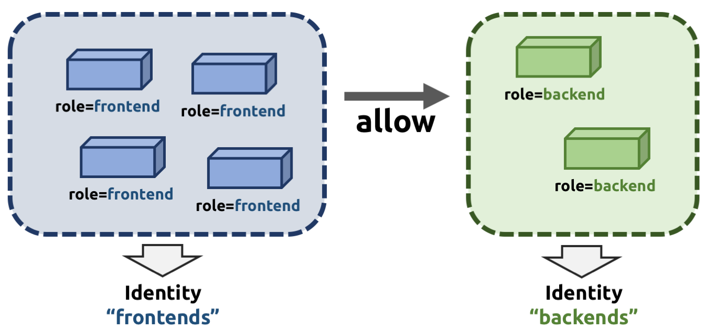
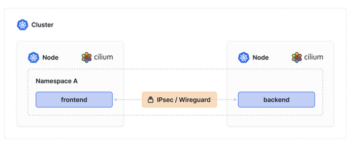
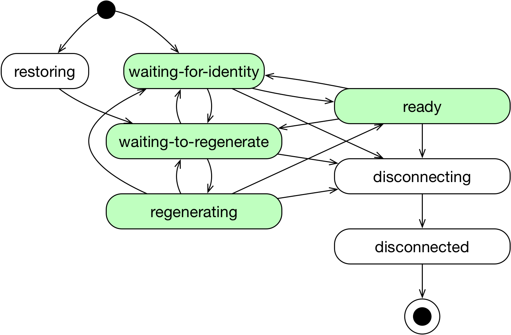
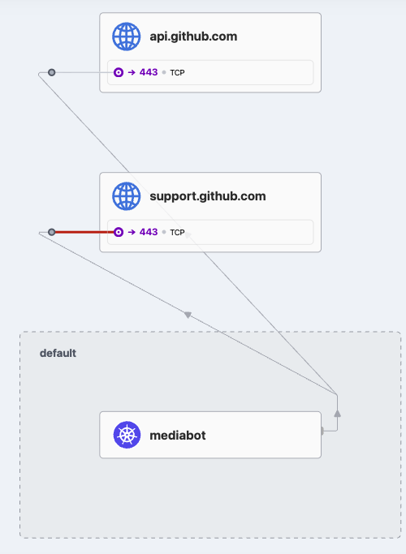
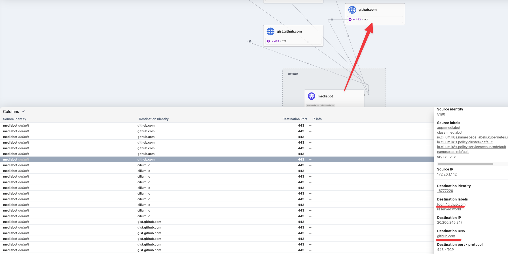
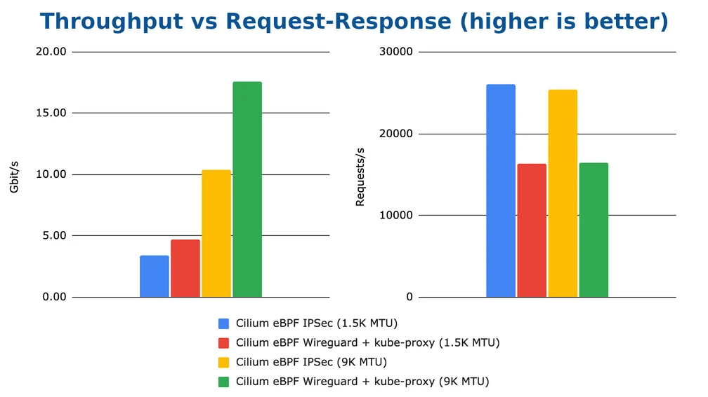
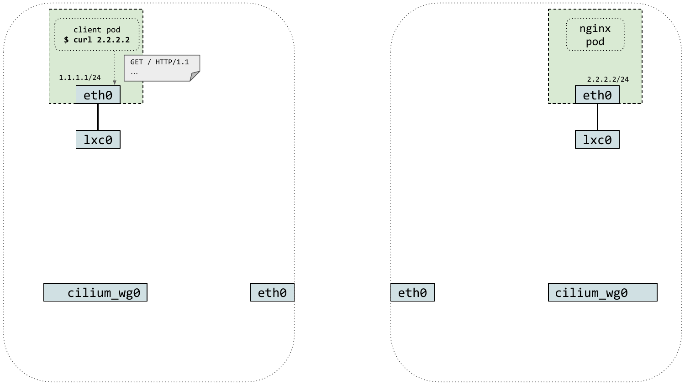
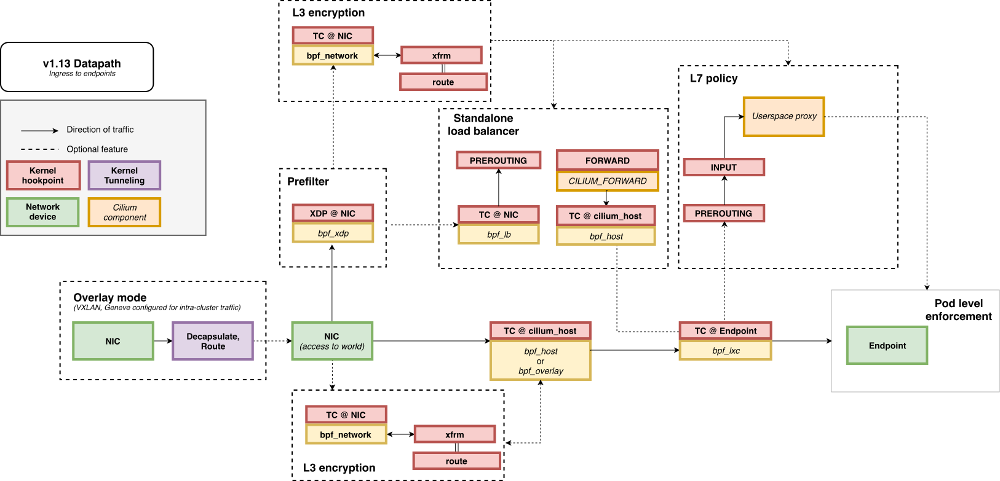
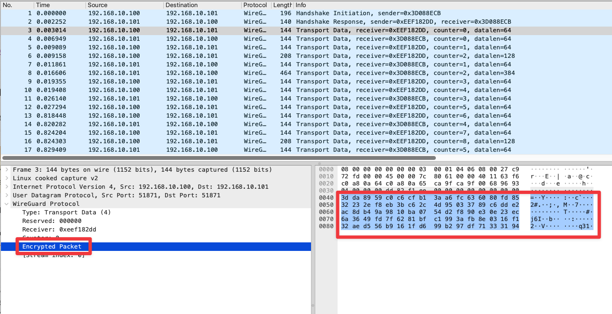
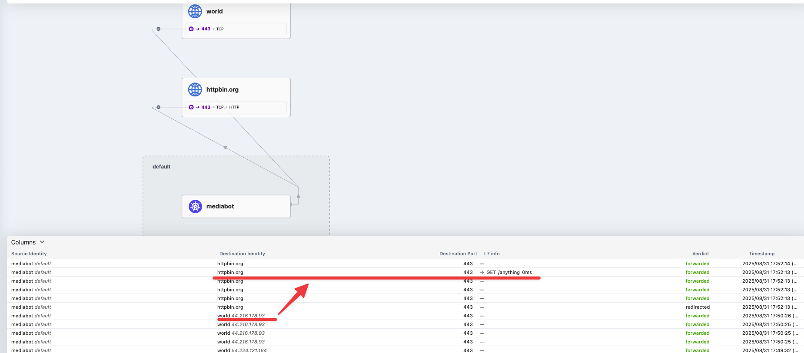

8주차 - Cilium Security & Tetragon
- 실습 환경 배포
실습 환경 소개 : k8s(1.33.4), cilium(1.18.1) - 기본 배포 가상 머신 : k8s-ctr, k8s-w1, k8s-w2
mkdir cilium-lab && cd cilium-lab curl -O https://raw.githubusercontent.com/gasida/vagrant-lab/refs/heads/main/cilium-study/8w/Vagrantfile vagrant up vagrant ssh k8s-ctr# 프로메테우스 접속 http://192.168.10.100:30001 # 그라파나 접속 http://192.168.10.100:30002 # 허블 UI 접속 http://192.168.10.100:30003
- Cilium Security 공식문서
Cilium 제공 보안 : Identity-Based(Layer3), Port Level(Layer4), Application protocol Level(Layer7) - Docs

Identity https://docs.cilium.io/en/stable/security/network/identity/ - 보안 정책은 세션 기반 프로토콜에 대해 상태 저장 정책 적용되어, 응답 패킷은 자동으로 허용됨 - Docs
- 보안 정책은 수신 or 송신 시 적용됨
- 기본 보안 정책! - Docs
- 정책이 로드되지 않은 경우, 정책 적용이 명시적으로 활성화되지 않은 한 모든 통신을 허용하는 것이 기본 동작입니다.
- 첫 번째 정책 규칙이 로드되는 즉시 정책 적용이 자동으로 활성화되며, 모든 통신은 허용 목록에 추가되어야 하며, 그렇지 않으면 관련 패킷이 삭제됩니다.
- 마찬가지로, 엔드포인트에 L4 정책이 적용되지 않으면 모든 포트와의 통신이 허용됩니다.
- 엔드포인트에 하나 이상의 L4 정책을 연결하면 명시적으로 허용하지 않는 한 포트에 대한 모든 연결이 차단됩니다.
- 투명한 암호화 : IPSec or WireGuard 로 Cilium 관리하는 호스트 트래픽과 엔드포인트 간 트래픽의 투명한 암호화 지원 - Docs , Youtube
- IPSec : Limit(BPF 호스트 라우팅에서는 미동작, IPsec 터널당 단일 CPU 코어로 제한) - Docs

Identity : 모든 엔드포인트에 ID가 할당. ID는 Labels 과 클러스터 내에 유일한 ID로 구성. - Docs
- 엔드포인트에는 Security Relevant Labels에 일치하는 ID가 할당.
- 엔드포인트들이 동일한 Security Relevant Labels 사용 시 동일한 ID를 공유.
kubectl get ciliumendpoints.cilium.io -n kube-system NAME SECURITY IDENTITY ENDPOINT STATE IPV4 IPV6 coredns-99ff8c6c4-hf6wt 29629 ready 172.20.1.110 coredns-99ff8c6c4-vgj4m 29629 ready 172.20.2.185 hubble-relay-fdd49b976-84mws 59228 ready 172.20.0.60 hubble-ui-655f947f96-mmq4n 5180 ready 172.20.0.243 metrics-server-5dd7b49d79-zqzjd 31611 ready 172.20.0.218 kubectl get ciliumidentities.cilium.io NAME NAMESPACE AGE 29629 kube-system 10h 31611 kube-system 10h 3332 kube-system 10h 5180 kube-system 10h 5795 kube-system 10h 59228 kube-system 10h 63751 cilium-monitoring 10h 7333 cilium-monitoring 10h 7849 local-path-storage 10h
- What is an Identity?
- 파드 또는 컨테이너가 시작되면 Cilium은 컨테이너 런타임에서 수신한 이벤트를 기반으로 네트워크에서 포드 또는 컨테이너를 나타내는 엔드포인트 를 생성합니다 .
kubectl get ciliumidentities.cilium.io 29629 -o yaml | yq { "apiVersion": "cilium.io/v2", "kind": "CiliumIdentity", "metadata": { "creationTimestamp": "2025-09-05T16:33:57Z", "generation": 1, "labels": { "io.kubernetes.pod.namespace": "kube-system" }, "name": "29629", "resourceVersion": "3752", "uid": "2586dbf9-9d61-4f0a-b63d-87e6400b11f2" }, "security-labels": { "k8s:io.cilium.k8s.namespace.labels.kubernetes.io/metadata.name": "kube-system", "k8s:io.cilium.k8s.policy.cluster": "default", "k8s:io.cilium.k8s.policy.serviceaccount": "coredns", "k8s:io.kubernetes.pod.namespace": "kube-system", "k8s:k8s-app": "kube-dns" } } kubectl exec -it -n kube-system ds/cilium -- cilium identity list ... 29629 k8s:io.cilium.k8s.namespace.labels.kubernetes.io/metadata.name=kube-system k8s:io.cilium.k8s.policy.cluster=default k8s:io.cilium.k8s.policy.serviceaccount=coredns k8s:io.kubernetes.pod.namespace=kube-system k8s:k8s-app=kube-dns ... kubectl get pod -n kube-system -l k8s-app=kube-dns --show-labels NAME READY STATUS RESTARTS AGE LABELS coredns-674b8bbfcf-fzdzw 1/1 Running 0 12m k8s-app=kube-dns,pod-template-hash=674b8bbfcf coredns-674b8bbfcf-t44kp 1/1 Running 0 12m k8s-app=kube-dns,pod-template-hash=674b8bbfcf## 기동 중인 파드에 label 추가 후 cilium id(보안 lable)에 반영 될지? : 반영되는가? 얼마나 시간이 걸리는가? ID가 변경되지는 않는가? kubectl label pods -n kube-system -l k8s-app=kube-dns study=8w kubectl get pod -n kube-system -l k8s-app=kube-dns --show-labels NAME READY STATUS RESTARTS AGE LABELS coredns-674b8bbfcf-fzdzw 1/1 Running 0 16m k8s-app=kube-dns,pod-template-hash=674b8bbfcf,study=8w coredns-674b8bbfcf-t44kp 1/1 Running 0 16m k8s-app=kube-dns,pod-template-hash=674b8bbfcf,study=8w # 3332 id를 확인해보면 study=8w 라는 label이 없다. # 새롭게 5759라는 id가 추가되었고 해당 id의 label을 보면 아래와 같이 coredns인 pod의 정보와 새롭게 부여한 study=8w라는 label을 갖고있다. kubectl exec -it -n kube-system ds/cilium -- cilium identity list 5795 k8s:io.cilium.k8s.namespace.labels.kubernetes.io/metadata.name=kube-system k8s:io.cilium.k8s.policy.cluster=default k8s:io.cilium.k8s.policy.serviceaccount=coredns k8s:io.kubernetes.pod.namespace=kube-system k8s:k8s-app=kube-dns k8s:study=8w ... # (위 내용 확인 후 아래 진행) coredns deployment 에 spec.template.metadata.labels에 아래 추가 시 반영 확인 kubectl edit deploy -n kube-system coredns ... template: metadata: labels: app: testing k8s-app: kube-dns ... # label을 바꾸니까 id가 바뀌어서 새로운 id로 추가됨 kubectl exec -it -n kube-system ds/cilium -- cilium identity list ... 29629 k8s:app=testing k8s:io.cilium.k8s.namespace.labels.kubernetes.io/metadata.name=kube-system k8s:io.cilium.k8s.policy.cluster=default k8s:io.cilium.k8s.policy.serviceaccount=coredns k8s:io.kubernetes.pod.namespace=kube-system k8s:k8s-app=kube-dns- Cilium은 pod update 이벤트를 watch하므로, labels 변경 시 endpoint가 waiting-for-identity 상태로 전환되어 새로운 identity를 할당받습니다.
- 이로 인해 security labels와 관련된 네트워크 정책도 자동으로 재적용됩니다. → 새로운 id가 할당됨!!
- 예시: 간단한 pod(simple-pod)를 생성하면 초기 security identity(예: 26830)가 할당됩니다.
- 이후
kubectl label pod/simple-pod run=not-simple-pod --overwrite로 labels를 변경하면,kubectl get ciliumendpoints명령에서 identity가 새 값(예: 8710)으로 업데이트된 것을 확인할 수 있습니다. 이는 policy enforcement에 즉시 반영됩니다.
- 다만, 대규모 클러스터에서 자주 labels를 변경하면 identity 할당이 빈번해져 성능 저하가 발생할 수 있으므로, identity-relevant labels를 제한하는 것이 권장됩니다
- Special Identities
- Cilium에서 관리하는 모든 엔드포인트에는 ID가 할당됩니다.
- Cilium에서 관리하지 않는 네트워크 엔드포인트와의 통신을 허용하기 위해 이러한 엔드포인트를 나타내는 특수 ID가 존재합니다.
- 특별히 예약된 ID에는
reserved문자열 접두사가 붙습니다
kubectl exec -it -n kube-system ds/cilium -- cilium identity list ID LABELS 1 reserved:host reserved:kube-apiserver 2 reserved:world 3 reserved:unmanaged 4 reserved:health 5 reserved:init 6 reserved:remote-node 7 reserved:kube-apiserver reserved:remote-node 8 reserved:ingress 9 reserved:world-ipv4 10 reserved:world-ipv6 8836 k8s:app.kubernetes.io/instance=metrics-server k8s:app.kubernetes.io/name=metrics-server k8s:io.cilium.k8s.namespace.labels.kubernetes.io/metadata.name=kube-system k8s:io.cilium.k8s.policy.cluster=default k8s:io.cilium.k8s.policy.serviceaccount=metrics-server ...Identity Numeric ID Description reserved:unknown0 The identity could not be derived. reserved:host1 The local host. Any traffic that originates from or is designated to one of the local host IPs. reserved:world2 Any network endpoint outside of the cluster reserved:unmanaged3 An endpoint that is not managed by Cilium, e.g. a Kubernetes pod that was launched before Cilium was installed. reserved:health4 This is health checking traffic generated by Cilium agents. reserved:init5 An endpoint for which the identity has not yet been resolved is assigned the init identity. This represents the phase of an endpoint in which some of the metadata required to derive the security identity is still missing. This is typically the case in the bootstrapping phase.
The init identity is only allocated if the labels of the endpoint are not known at creation time. This can be the case for the Docker plugin.reserved:remote-node6 The collection of all remote cluster hosts. Any traffic that originates from or is designated to one of the IPs of any host in any connected cluster other than the local node. reserved:kube-apiserver7 Remote node(s) which have backend(s) serving the kube-apiserver running. reserved:ingress8 Given to the IPs used as the source address for connections from Ingress proxies.
- Identity Management in the Cluster

- ID는 전체 클러스터에서 유효합니다.
- 즉, 여러 클러스터 노드에서 여러 개의 포드 또는 컨테이너가 시작되더라도 ID 관련 레이블을 공유하는 경우 모든 포드 또는 컨테이너가 단일 ID를 확인하고 공유합니다.
- 이를 위해서는 클러스터 노드 간의 조정이 필요합니다.
- 엔드포인트 ID를 확인하는 작업은 분산 키-값 저장소를 통해 수행됩니다.
- 분산 키-값 저장소는 다음 값이 이전에 확인되지 않은 경우 새로운 고유 식별자를 생성하는 형태의 원자적 연산을 수행할 수 있도록 합니다.
- 이를 통해 각 클러스터 노드는 ID 관련 레이블 하위 집합을 생성한 다음 키-값 저장소를 쿼리하여 ID를 도출할 수 있습니다.
- 레이블 집합이 이전에 쿼리되었는지 여부에 따라 새 ID가 생성되거나 초기 쿼리의 ID가 반환됩니다.
- Identity Management Mode - Docs
NetworkPolicy : 3가지 형식 제공 - Docs

https://isovalent.com/blog/post/intro-to-cilium-network-policies/ - Pod의 유입 또는 유출 시 L3 및 L4 정책을 지원하는 표준 NetworkPolicy 리소스입니다.
- 3~7 계층에서 수신 및 송신 모두에 대한 정책 지정을 지원하는 CustomResourceDefinition 으로 제공되는 확장된 CiliumNetworkPolicy 형식입니다.
- CiliumClusterwideNetworkPolicy 형식 은 Cilium에서 적용할 클러스터 전체 정책을 지정하는 클러스터 범위 CustomResourceDefinition 입니다. 이 사양은 네임스페이스가 지정되지 않은 CiliumNetworkPolicy 와 동일합니다 .
Policy Enforcement Modes by Cilium Network Policy - Docs
- three policy enforcement modes
- default
- always
- never
- Endpoint default policy
- 기본적으로 모든 엔드포인트에 대해 모든 송신 및 수신 트래픽이 허용됩니다. 네트워크 정책에 따라 엔드포인트가 선택되면 명시적으로 허용된 트래픽 만 허용되는 기본 거부 상태로 전환됩니다 . 이 상태는 방향별로 적용됩니다.
- 규칙이 엔드포인트를 선택 하고 해당 규칙에 수신 섹션이 있는 경우, 엔드포인트는 수신에 대해 기본 거부 모드로 전환됩니다.
- 규칙이 엔드포인트를 선택 하고 규칙에 송신 섹션이 있는 경우, 엔드포인트는 송신에 대해 기본 거부 모드로 전환됩니다.
EnableDefaultDeny7계층 정책 에는 적용되지 않습니다.- 7계층 모두 허용이 포함되지 않은 7계층 규칙을 추가하면 default-deny가 명시적으로 비활성화된 경우에도 삭제가 발생합니다.
- 기본적으로 모든 엔드포인트에 대해 모든 송신 및 수신 트래픽이 허용됩니다. 네트워크 정책에 따라 엔드포인트가 선택되면 명시적으로 허용된 트래픽 만 허용되는 기본 거부 상태로 전환됩니다 . 이 상태는 방향별로 적용됩니다.
- Rule Basics
- 엔드포인트 선택기 / 노드 선택기
- 정책 규칙이 적용될 엔드포인트 또는 노드를 선택합니다. 정책 규칙은 선택기에 지정된 레이블과 일치하는 모든 엔드포인트에 적용.
- 입구
- 엔드포인트의 유입 시, 즉 엔드포인트에 들어오는 모든 네트워크 패킷에 적용해야 하는 규칙 목록
- 출구
- 엔드포인트의 출구에서 적용되어야 하는 규칙 목록, 즉 엔드포인트를 떠나는 모든 네트워크 패킷에 적용되어야 하는 규칙 목록
- 라벨
- 레이블은 규칙을 식별하는 데 사용됩니다. 레이블을 사용하여 규칙을 나열하고 삭제할 수 있습니다. Kubernetes를 통해 가져온 정책 규칙에는 NetworkPolicy 또는 CiliumNetworkPolicy 리소스 에 지정된 이름에 해당하는 레이블이 자동으로
io.cilium.k8s.policy.name=NAME지정됨.
- 레이블은 규칙을 식별하는 데 사용됩니다. 레이블을 사용하여 규칙을 나열하고 삭제할 수 있습니다. Kubernetes를 통해 가져온 정책 규칙에는 NetworkPolicy 또는 CiliumNetworkPolicy 리소스 에 지정된 이름에 해당하는 레이블이 자동으로
- 엔드포인트 선택기 / 노드 선택기
- 정책 에디터 온라인 사이트 - https://editor.networkpolicy.io/ , https://isovalent.com/blog/post/tutorial-network-policy-editor/
도전과제1Layer 3 예시 - Docs- 엔드포인트 기반 : 두 엔드포인트가 Cilium에 의해 관리되고 레이블이 할당되는 경우 관계를 설명하는 데 사용됩니다. 이 방법의 장점은 IP 주소가 정책에 인코딩되지 않고 정책이 주소 지정과 완전히 분리된다는 것입니다.
# Simple Ingress 허용 apiVersion: "cilium.io/v2" kind: CiliumNetworkPolicy metadata: name: "l3-rule" spec: endpointSelector: matchLabels: role: backend ingress: - fromEndpoints: - matchLabels: role: frontend
- 서비스 기반 : 레이블과 CIDR의 중간 형태로, 오케스트레이션 시스템의 서비스 개념을 활용합니다. 쿠버네티스의 서비스 엔드포인트 개념이 좋은 예입니다. 이 엔드포인트는 서비스의 모든 백엔드 IP 주소를 포함하도록 자동으로 유지됩니다. 이를 통해 Cilium에서 대상 엔드포인트를 제어하지 않더라도 정책에 IP 주소를 하드코딩하지 않아도 됩니다.
apiVersion: "cilium.io/v2" kind: CiliumNetworkPolicy metadata: name: "service-rule" spec: endpointSelector: matchLabels: id: app2 egress: - toServices: # Services may be referenced by namespace + name - k8sService: serviceName: myservice namespace: default # Services may be referenced by namespace + label selector - k8sServiceSelector: selector: matchLabels: env: staging namespace: another-namespace
- 엔티티 기반 : 엔티티는 IP 주소를 알지 못해도 분류할 수 있는 원격 피어를 설명하는 데 사용됩니다. 여기에는 엔드포인트를 제공하는 로컬 호스트에 대한 연결이나 클러스터 외부에 대한 모든 연결이 포함됩니다.
# 레이블이 있는 모든 엔드포인트가 env=devkube-apiserver에 액세스하도록 허용 apiVersion: "cilium.io/v2" kind: CiliumNetworkPolicy metadata: name: "dev-to-kube-apiserver" spec: endpointSelector: matchLabels: env: dev egress: - toEntities: - kube-apiserver
- 노드 기반 : 엔티티의 확장입니다
remote-node. 선택적으로 노드는 고유한 ID를 가질 수 있으며, 이를 사용하여 특정 노드의 접근만 허용하거나 차단할 수 있습니다.apiVersion: "cilium.io/v2" kind: CiliumNetworkPolicy metadata: name: "to-prod-from-control-plane-nodes" spec: endpointSelector: matchLabels: env: prod ingress: - fromNodes: - matchLabels: node-role.kubernetes.io/control-plane: ""
- IP/CIDR 기반 : 원격 피어가 엔드포인트가 아닌 경우 외부 서비스와의 관계를 설명하는 데 사용됩니다. 이를 위해서는 IP 주소 또는 서브넷을 정책에 직접 지정해야 합니다. 이 구성은 안정적인 IP 또는 서브넷 할당이 필요하므로 최후의 수단으로 사용해야 합니다.
apiVersion: "cilium.io/v2" kind: CiliumNetworkPolicy metadata: name: "cidr-rule" spec: endpointSelector: matchLabels: app: myService egress: - toCIDR: - 20.1.1.1/32 - toCIDRSet: - cidr: 10.0.0.0/8 except: - 10.96.0.0/12
- DNS 기반 : DNS 조회를 통해 IP로 변환된 DNS 이름을 사용하여 원격의 비클러스터 피어를 선택합니다. 위 IP/CIDR 기반 규칙의 모든 제한 사항을 공유합니다. DNS 정보는 프록시를 통해 DNS 트래픽을 라우팅하여 수집합니다. DNS TTL은 준수됩니다.
- DNS 정책은 Cilium에서 관리하지 않지만 DNS 쿼리 가능 도메인 이름을 가진 엔드포인트에 대한 계층 3 정책을 정의하는 데 사용됩니다.
- DNS 응답에 제공된 IP 주소는 CIDR 기반 정책의 IP와 유사한 방식으로 Cilium에서 허용됩니다
- 도메인 이름과 IP 주소를 연결하기 위해 Cilium은 DNS 프록시를 사용하여 엔드포인트별 DNS 응답을 가로챕니다 .
- 이를 위해서는 Cilium이 DNS 요청을 허용하는 L7 정책으로 구성되어 있어야 합니다
--enable-l7-proxy=true.
- 모든 규칙에 대해 L3 CIDR 기반 규칙이 생성되어
toFQDNs동일한 엔드포인트에 적용됩니다.
- IP 정보는 규칙에 의해 삽입되도록 선택되며
matchName,matchPattern노드에서 Cilium이 확인한 모든 DNS 응답에서 수집됩니다.
- DNS 프록시는 각 Cilium 에이전트에 제공됩니다. 따라서 정책의 대상이 되는 DNS 요청은 Cilium 에이전트 포드의 가용성에 따라 달라집니다.
- DNS 기반 규칙은 외부 연결을 위한 것이며 CIDR 기반 규칙과 유사하게 동작합니다.
- 클러스터 내부 트래픽에 대해서는 서비스 기반 및 엔드포인트 기반을 참조하세요.
- 허용할 IP는 다음을 통해 선택됩니다.
toFQDNs.matchName- 정확히 일치하는 도메인의 IP 주소를 삽입합니다
matchName.
- 여러 개의 고유 이름을 별도의
matchName항목에 포함할 수 있으며, 일치하는 도메인의 IP 주소가matchName삽입됩니다.
- 정확히 일치하는 도메인의 IP 주소를 삽입합니다
toFQDNs.matchPattern- 와일드카드를 고려하여 패턴과 일치하는 도메인의 IP 주소를 삽입합니다
matchPattern. 패턴은 도메인 이름에 허용되는 문자(az, 0-9, .)로 구성.됩니다-.
- 다음과 같은 여러 가지 편의 동작을 갖춘 와일드카드로 허용됩니다.
- 도메인 내에서
.구분 기호를 제외하고 0개 이상의 유효한 DNS 문자를 허용합니다.
.cilium.io는 일치sub.cilium.io하지만cilium.io또는 는 일치하지 않습니다sub.sub.cilium.io. 는 및 와part*ial.com일치합니다 .partial.compart-extra-ial.com
- 단독으로는 모든 이름과 일치하며, 캐시된 모든 DNS IP를 이 규칙에 삽입합니다.
- 도메인 내에서
- 와일드카드를 고려하여 패턴과 일치하는 도메인의 IP 주소를 삽입합니다
apiVersion: "cilium.io/v2" kind: CiliumNetworkPolicy metadata: name: "to-fqdn" spec: endpointSelector: matchLabels: app: test-app egress: - toEndpoints: - matchLabels: "k8s:io.kubernetes.pod.namespace": kube-system "k8s:k8s-app": kube-dns toPorts: - ports: - port: "53" protocol: ANY rules: dns: - matchPattern: "*" - toFQDNs: - matchName: "my-remote-service.com"
- 엔드포인트 기반 : 두 엔드포인트가 Cilium에 의해 관리되고 레이블이 할당되는 경우 관계를 설명하는 데 사용됩니다. 이 방법의 장점은 IP 주소가 정책에 인코딩되지 않고 정책이 주소 지정과 완전히 분리된다는 것입니다.
도전과제2Layer 4 예시 - Docs- 계층 4 정책은 계층 3 정책과 함께 또는 독립적으로 지정할 수 있습니다.
- 엔드포인트가 특정 프로토콜을 사용하여 특정 포트에서 패킷을 송수신하는 기능을 제한합니다.
- 엔드포인트에 계층 4 정책이 지정되지 않은 경우, 엔드포인트는 ICMP를 포함한 모든 계층 4 포트 및 프로토콜에서 송수신할 수 있습니다.
- 계층 4 정책이 지정된 경우, 정책에서 허용하는 연결과 관련된 경우를 제외하고는 차단됩니다.
- 계층 4 정책은 서비스 포트 매핑이 적용된 후 포트에 적용됩니다.
- 레이어 4 정책은 필드를 사용하여 수신 및 송신 모두에서 지정할 수 있습니다
- L4 정책 (예시)
apiVersion: "cilium.io/v2" kind: CiliumNetworkPolicy metadata: name: "l4-rule" spec: endpointSelector: matchLabels: app: myService egress: - toPorts: - ports: - port: "80" protocol: TCP
- 포트 범위 (예시) : 80~444 포트 범위
apiVersion: "cilium.io/v2" kind: CiliumNetworkPolicy metadata: name: "l4-port-range-rule" spec: endpointSelector: matchLabels: app: myService egress: - toPorts: - ports: - port: "80" endPort: 444 protocol: TCP
- CIDR-dependent Layer 4 규칙 :
apiVersion: "cilium.io/v2" kind: CiliumNetworkPolicy metadata: name: "cidr-l4-rule" spec: endpointSelector: matchLabels: role: crawler egress: - toCIDR: - 192.0.2.0/24 toPorts: - ports: - port: "80" protocol: TCP
- TLS SNI 제한
- 여러 웹사이트가 동일한 서버에 공유 IP 주소로 호스팅되는 경우, TLS 프로토콜의 확장 기능인 서버 이름 표시(SNI)는 클라이언트가 접속하려는 웹사이트에 대한 올바른 SSL 인증서를 수신하도록 보장합니다.
- SNI를 사용하면 HTTP 연결이 설정될 때 핸드셰이크 이후가 아닌, TLS 핸드셰이크 중에 웹사이트의 호스트 이름 또는 도메인 이름을 지정할 수 있습니다.
- Cilium 네트워크 정책은 엔드포인트가 TLS 핸드셰이크를 설정하는 기능을 지정된 SNI 목록으로 제한할 수 있습니다.
- SNI 정책은 항상 송신 레벨에서 구성되며 일반적으로 포트 정책과 함께 설정됩니다.
- TLS SNI 정책을 시행하려면 L7 프록시를 활성화해야 합니다.
- TLS SNI 정책 (예시)
apiVersion: "cilium.io/v2" kind: CiliumNetworkPolicy metadata: name: "l4-sni-rule" spec: endpointSelector: matchLabels: app: myService egress: - toPorts: - ports: - port: "443" protocol: TCP serverNames: # SNI - one.one.one.one
도전과제3Layer 7 예시 - Docs- 7계층 정책 규칙은 4계층 예제 규칙에 내장되어 있으며 수신 및 송신에 대해 지정할 수 있습니다.
L7Rules구조는 프로토콜별 필드의 열거형을 포함하는 기본 유형입니다.// L7Rules is a union of port level rule types. Mixing of different port // level rule types is disallowed, so exactly one of the following must be set. // If none are specified, then no additional port level rules are applied. type L7Rules struct { // HTTP specific rules. // // +optional HTTP []PortRuleHTTP `json:"http,omitempty"` // Kafka-specific rules. // // +optional Kafka []PortRuleKafka `json:"kafka,omitempty"` // DNS-specific rules. // // +optional DNS []PortRuleDNS `json:"dns,omitempty"` }- 이 구조는 공용체로 구현됩니다. 즉, 포트당 하나의 멤버 필드만 사용할 수 있습니다.
toPorts동일한 항목을 가진 여러 규칙이PortProtocol중복되는 엔드포인트 목록을 선택하는 경우, 동일한 유형이면 계층 7 규칙이 결합됩니다.
- 유형이 다르면 정책이 거부됩니다.
- 각 멤버는 애플리케이션 프로토콜 규칙 목록으로 구성됩니다. 규칙 중 하나라도 일치하면 7계층 요청이 허용됩니다.
- 규칙이 지정되지 않으면 모든 트래픽이 허용됩니다.
- 정책에 계층 4 규칙이 지정되어 있고, 계층 7 규칙이 포함된 유사한 계층 4 규칙도 지정된 경우, 후자 규칙의 계층 7 부분은 아무런 효과가 없습니다.
- 3계층 및 4계층 정책과 달리 7계층 규칙 위반은 패킷 손실로 이어지지 않습니다. 대신, 가능한 경우 애플리케이션 프로토콜별 접근 거부 메시지를 작성하여 반환합니다. 예를 들어, 정책을 위반하는 HTTP 요청에는 HTTP 403 접근 거부 메시지를, DNS 요청에는 DNS 거부 응답을 보냅니다.
- 레이어 7 정책은 노드 로컬 Envoy 인스턴스를 통해 트래픽을 프록시하며, 이 인스턴스는 DaemonSet으로 배포되거나 에이전트 포드에 내장됩니다.
- Envoy가 에이전트 포드에 내장된 경우, 정책이 적용되는 레이어 7 트래픽은 Cilium 에이전트 포드의 가용성에 따라 달라집니다.
HTTP
- Path
- Path는 요청 경로와 일치하는 확장된 POSIX 정규 표현식입니다. 현재 RFC 3986에 정의된 URL의 기존 "경로" 부분에서 허용되지 않는 문자를 포함할 수 있습니다. 경로는 .(마침표)로 시작해야 합니다
/. 생략하거나 비어 있는 경우 모든 경로가 허용됩니다.
- Path는 요청 경로와 일치하는 확장된 POSIX 정규 표현식입니다. 현재 RFC 3986에 정의된 URL의 기존 "경로" 부분에서 허용되지 않는 문자를 포함할 수 있습니다. 경로는 .(마침표)로 시작해야 합니다
- Method
- 메서드는 요청의 메서드와 일치하는 확장된 POSIX 정규식입니다(예
GET: ,POST,PUT,PATCH,DELETE, …). 생략되거나 비어 있으면 모든 메서드가 허용됩니다.
- 메서드는 요청의 메서드와 일치하는 확장된 POSIX 정규식입니다(예
- Host
- 호스트는 요청의 호스트 헤더와 일치하는 확장된 POSIX 정규식입니다(예: )
foo.com. 생략되거나 비어 있는 경우 호스트 헤더 값은 무시됩니다.
- 호스트는 요청의 호스트 헤더와 일치하는 확장된 POSIX 정규식입니다(예: )
- Headers
- 헤더는 요청에 반드시 포함되어야 하는 HTTP 헤더 목록입니다. 생략하거나 비어 있으면 헤더의 존재 여부와 관계없이 요청이 허용됩니다.
- 헤더 값에 대해 좀 더 고급 헤더 매칭을 수행할 수도 있습니다.
HeaderMatches는 반드시 존재해야 하며 주어진 값과 일치해야 하는 HTTP 헤더 목록입니다. 'Mismatch' 필드는 일치하는 헤더가 없을 때 수행할 작업을 지정하는 데 사용할 수 있습니다.
- GET /public 허용
apiVersion: "cilium.io/v2" kind: CiliumNetworkPolicy metadata: name: "rule1" spec: description: "Allow HTTP GET /public from env=prod to app=service" endpointSelector: matchLabels: app: service ingress: - fromEndpoints: - matchLabels: env: prod toPorts: - ports: - port: "80" protocol: TCP rules: http: - method: "GET" path: "/public"
- 헤더가 설정된 경우 모든 GET /path1 및 PUT /path2
apiVersion: "cilium.io/v2" kind: CiliumNetworkPolicy metadata: name: "l7-rule" spec: endpointSelector: matchLabels: app: myService ingress: - toPorts: - ports: - port: '80' protocol: TCP rules: http: - method: GET path: "/path1$" - method: PUT path: "/path2$" headers: - 'X-My-Header: true'
카프카(베타) : Skip - Docs
DNS 정책 및 IP 검색 - Docs
- 정책은 DNS 트래픽에 적용되어 특정 DNS 쿼리 이름 또는 이름 패턴을 허용하거나 허용하지 않을 수 있습니다(쿼리 유형과 같은 다른 DNS 필드는 고려되지 않음). 이 정책은 DNS 프록시를 통해 적용되며, L3 DNS 기반
toFQDNs규칙을 채우는 데 사용되는 IP 주소를 수집하는 데에도 사용됩니다.
- 계층 7 DNS 정책은 다른 계층 3 규칙 없이도 적용할 수 있지만 계층 7 규칙(계층 3 및 4 구성 요소 포함)이 있으면 다른 트래픽이 차단됩니다.
- DNS 정책은 다음을 통해 적용될 수 있습니다.
matchName: 정확히 일치하는 도메인에 대한 쿼리를 허용합니다
matchPattern: 와일드카드를 고려하여 패턴과 일치하는 도메인에 대한 쿼리를 허용합니다.
apiVersion: cilium.io/v2 kind: CiliumNetworkPolicy metadata: name: "tofqdn-dns-visibility" spec: endpointSelector: matchLabels: any:org: alliance egress: - toEndpoints: - matchLabels: "k8s:io.kubernetes.pod.namespace": kube-system "k8s:k8s-app": kube-dns toPorts: - ports: - port: "53" protocol: ANY rules: dns: - matchName: "cilium.io" - matchPattern: "*.cilium.io" - matchPattern: "*.api.cilium.io" - toFQDNs: - matchName: "cilium.io" - matchName: "sub.cilium.io" - matchName: "service1.api.cilium.io" - matchPattern: "special*service.api.cilium.io" toPorts: - ports: - port: "80" protocol: TCP
- 쿠버네티스에서 DNS 정책을 적용할 때,
service.namespace.svc.cluster.local에 대한 쿼리는 명시적으로 허용되어야 합니다 .matchPattern: *.*.svc.cluster.local.
- 마찬가지로, FQDN을 완성하기 위해 DNS 검색 목록에 의존하는 쿼리는 전체가 허용되어야 합니다.
- 예를 들어,
servicename로 성공하는 쿼리는 또는servicename.namespace.svc.cluster.local.로 허용되어야 합니다 .
Obtaining DNS Data for use by
toFQDNs- IP는 프록시를 통해 DNS 요청을 가로채서 얻습니다. 이러한 IP는
toFQDN규칙을 사용하여 선택할 수 있습니다.
- DNS 응답은 TTL을 준수하여 Cilium 에이전트 내에 캐시됩니다.
- DNS 프록시는 송신 DNS 트래픽을 가로채고 응답에서 확인된 IP 주소를 기록합니다.
- 이 가로채기 자체는 DNS 요청을 제어하는 별도의 정책 규칙이므로 별도로 지정해야 합니다.
- DNS 요청에 정책을 적용하고 DNS 프록시를 구성하는 방법에 대한 자세한 내용은 레이어 7 예제를 참조하세요 .
- 애플리케이션에 대한 가로채기된 DNS 응답의 IP만 Cilium 정책 규칙에서 허용됩니다.
- 특정 도메인 이름에 대해 Cilium 인스턴스가 관리하는 모든 포드에 대한 응답의 IP는 정책에 따라 허용됩니다(TTL 준수).
- 이를 통해 허용된 IP가 애플리케이션에 반환된 IP와 일치하도록 할 수 있습니다.
- DNS 프록시는 와일드카드 L7 DNS
matchPattern규칙에서 허용된 응답의 IP를 규칙에서 사용할 수 있도록 허용하는 유일한 방법입니다toFQDNs
# 다음 예제는 DNS 요청을 차단하지 않고 가로채기 방식으로 DNS 데이터를 수집합니다. # sub.cilium.io 및 모든 하위 도메인에 대한 L3 연결을 cilium.io허용 sub.cilium.io 합니다 apiVersion: cilium.io/v2 kind: CiliumNetworkPolicy metadata: name: "tofqdn-dns-visibility" spec: endpointSelector: matchLabels: any:org: alliance egress: - toEndpoints: - matchLabels: "k8s:io.kubernetes.pod.namespace": kube-system "k8s:k8s-app": kube-dns toPorts: - ports: - port: "53" protocol: ANY rules: dns: - matchPattern: "*" - toFQDNs: - matchName: "cilium.io" - matchName: "sub.cilium.io" - matchPattern: "*.sub.cilium.io"
Alpine/musl deployments and DNS Refused - Docs
- Some common container images treat the DNS
Refusedresponse when the DNS Proxy rejects a query as a more general failure. This stops traversal of the search list defined in/etc/resolv.conf. It is common for pods to search by appending.svc.cluster.local.to DNS queries. When this occurs, a lookup forcilium.iomay first be attempted ascilium.io.namespace.svc.cluster.local.and rejected by the proxy. Instead of continuing and eventually attemptingcilium.io.alone, the Pod treats the DNS lookup is treated as failed.
- This can be mitigated with the
--tofqdns-dns-reject-response-codeoption. The default isrefusedbutnameErrorcan be selected, causing the proxy to return a NXDomain response to refused queries.
- A more pod-specific solution is to configure
ndotsappropriately for each Pod, viadnsConfig, so that the search list is not used for DNS lookups that do not need it. See the Kubernetes documentation for instructions.
도전과제4Disk based Cilium Network Policies - Docs
- Using Kubernetes Constructs In Policy : 정책에서 쿠버네티스 리소스를 활용 - Docs
Cilium Endpoint Lifecycle : - Docs

https://docs.cilium.io/en/stable/security/policy/lifecycle/ restoring: The endpoint was started before Cilium started, and Cilium is restoring its networking configuration.
waiting-for-identity: Cilium is allocating a unique identity for the endpoint.
waiting-to-regenerate: The endpoint received an identity and is waiting for its networking configuration to be (re)generated.
regenerating: The endpoint’s networking configuration is being (re)generated. This includes programming eBPF for that endpoint.
ready: The endpoint’s networking configuration has been successfully (re)generated.
disconnecting: The endpoint is being deleted.
disconnected: The endpoint has been deleted.
- Threat Model - Docs
- Tutorial: Cilium Network Policy in Practice (Part 2) - Blog

{kind=link}
{kind=link}
{kind=link}
- Cilium Security 실습
2.1. [Lab1] Locking Down External Access with DNS-Based Policies : DNS 기반 보안 정책 - Docs
- CIDR 또는 IP 기반 정책은 외부 서비스와 연결된 IP가 자주 변경될 수 있으므로 관리가 어렵고 번거롭습니다.
- Cilium의 DNS 기반 정책은 DNS-IP 매핑 추적과 같은 복잡한 측면을 관리하는 동시에 액세스 제어를 쉽게 지정할 수 있는 메커니즘을 제공합니다.
- 이 가이드에서는 다음 사항에 대해 알아봅니다.
- DNS 기반 정책을 사용하여 클러스터 외부 서비스에 대한 이탈 액세스 제어
- 패턴(또는 와일드카드)을 사용하여 DNS 도메인 하위 집합을 허용 목록에 추가
- 외부 서비스 접근 제한을 위한 DNS, 포트 및 L7 규칙 결합
2.1.1. 데모 애플리케이션 배포
- Empire의 mediabot pod가 Empire의 git 저장소 관리를 위해 GitHub에 접근해야 하는 간단한 시나리오를 사용하겠습니다.
- pod는 다른 외부 서비스에 접근할 수 없어야 합니다.
# hubble ui 에 pod name 표기를 위해 app labels 추가 >> 빼고 배포해보고 차이점을 확인해보자. cat << EOF > dns-sw-app.yaml apiVersion: v1 kind: Pod metadata: name: mediabot labels: org: empire class: mediabot app: mediabot spec: containers: - name: mediabot image: quay.io/cilium/json-mock:v1.3.8@sha256:5aad04835eda9025fe4561ad31be77fd55309af8158ca8663a72f6abb78c2603 dnsConfig: options: - name: ndots value: "2" EOF kubectl apply -f dns-sw-app.yaml kubectl wait pod/mediabot --for=condition=Ready # 확인 kubectl exec -it -n kube-system ds/cilium -- cilium identity list 62612 k8s:app=mediabot k8s:class=mediabot k8s:io.cilium.k8s.namespace.labels.kubernetes.io/metadata.name=default k8s:io.cilium.k8s.policy.cluster=default k8s:io.cilium.k8s.policy.serviceaccount=default k8s:io.kubernetes.pod.namespace=default k8s:org=empire kubectl get pods NAME READY STATUS RESTARTS AGE mediabot 1/1 Running 0 36s # 외부 통신 확인 : hubble ui 에서 확인 kubectl exec mediabot -- curl -I -s https://api.github.com | head -1 kubectl exec mediabot -- curl -I -s --max-time 5 https://support.github.com | head -1
2.1.2. DNS Egress 정책 적용 1 :
mediabot포드가api.github.com에만 액세스하도록 허용# egress에 toFQDNs만 설정했을때 cat << EOF | kubectl apply -f - apiVersion: "cilium.io/v2" kind: CiliumNetworkPolicy metadata: name: "fqdn" spec: endpointSelector: matchLabels: org: empire class: mediabot egress: - toFQDNs: - matchName: "api.github.com" EOF # curl 요청시, coredns쪽에 대한 policy가 누락되어 dns query가 안됨! kubectl exec mediabot -- curl -I -s https://api.github.com | head -1 command terminated with exit code 6 # cat << EOF | kubectl apply -f - apiVersion: "cilium.io/v2" kind: CiliumNetworkPolicy metadata: name: "fqdn" spec: endpointSelector: matchLabels: org: empire class: mediabot egress: - toFQDNs: - matchName: "api.github.com" - toEndpoints: - matchLabels: "k8s:io.kubernetes.pod.namespace": kube-system "k8s:k8s-app": kube-dns toPorts: - ports: - port: "53" protocol: ANY rules: dns: - matchPattern: "*" EOF # 확인 kubectl get cnp NAME AGE VALID fqdn 4s True # 오른쪽 끝에 IDENTITIES를 보면 위에서 확인했던 id와 동일 kubectl exec -it -n kube-system ds/cilium -- cilium policy selectors SELECTOR LABELS USERS IDENTITIES &LabelSelector{MatchLabels:map[string]string{any.class: mediabot,any.org: empire,k8s.io.kubernetes.pod.namespace: default,},MatchExpressions:[]LabelSelectorRequirement{},} default/fqdn 1 62612 cilium config view | grep -i dns dnsproxy-enable-transparent-mode true dnsproxy-socket-linger-timeout 10 hubble-metrics dns drop tcp flow port-distribution icmp httpV2:exemplars=true;labelsContext=source_ip,source_namespace,source_workload,destination_ip,destination_namespace,destination_workload,traffic_direction tofqdns-dns-reject-response-code refused tofqdns-enable-dns-compression true tofqdns-endpoint-max-ip-per-hostname 1000 tofqdns-idle-connection-grace-period 0s tofqdns-max-deferred-connection-deletes 10000 tofqdns-preallocate-identities true tofqdns-proxy-response-max-delay 100ms # 외부 통신 확인 : hubble ui 에서 확인 kubectl exec mediabot -- curl -I -s https://api.github.com | head -1 kubectl exec mediabot -- curl -I -s --max-time 5 https://support.github.com | head -1 # cilium-agent 내에 go 로 구현된 lightweight proxy 가 DNS 쿼리/응답 감시와 캐싱처리 # cache는 기본 0초로 되어있고 cilium-config의 tofqdns-min-ttl 시간을 통해서 cache 시간을 변경 할 수 있다. kubectl get cm -n kube-system cilium-config kind: ConfigMap metadata: annotations: meta.helm.sh/release-name: cilium meta.helm.sh/release-namespace: kube-system ... data: ... tofqdns-min-ttl: "3600" # 1시간 ... cilium hubble port-forward& hubble observe --pod mediabot Sep 6 05:57:31.756: default/mediabot:32830 (ID:62612) <- kube-system/coredns-5f98ddc984-rk7wm:53 (ID:10309) dns-response proxy FORWARDED (DNS Answer TTL: 4294967295 (Proxy api.github.com. AAAA)) ... Sep 6 05:57:31.761: default/mediabot:44960 (ID:62612) -> api.github.com:443 (ID:16777217) policy-verdict:L3-Only EGRESS ALLOWED (TCP Flags: SYN) ... # (옵션) coredns 로그로 직접 확인해보기 k9s -> configmap (coredns) : log 추가 kubectl rollout restart deploy -n kube-system coredns ## 로깅 활성화 kubectl logs -n kube-system -l k8s-app=kube-dns -f ## 호출 kubectl exec mediabot -- curl -I -s https://api.github.com | head -1 kubectl exec mediabot -- curl -I -s https://api.github.com | head -1 hubble observe --pod mediabot ## cilium 파드 이름 export CILIUMPOD0=$(kubectl get -l k8s-app=cilium pods -n kube-system --field-selector spec.nodeName=k8s-ctr -o jsonpath='{.items[0].metadata.name}') export CILIUMPOD1=$(kubectl get -l k8s-app=cilium pods -n kube-system --field-selector spec.nodeName=k8s-w1 -o jsonpath='{.items[0].metadata.name}') export CILIUMPOD2=$(kubectl get -l k8s-app=cilium pods -n kube-system --field-selector spec.nodeName=k8s-w2 -o jsonpath='{.items[0].metadata.name}') echo $CILIUMPOD0 $CILIUMPOD1 $CILIUMPOD2 ## 단축키(alias) 지정 alias c0="kubectl exec -it $CILIUMPOD0 -n kube-system -c cilium-agent -- cilium" alias c1="kubectl exec -it $CILIUMPOD1 -n kube-system -c cilium-agent -- cilium" alias c2="kubectl exec -it $CILIUMPOD2 -n kube-system -c cilium-agent -- cilium" ## c0 fqdn cache list c1 fqdn cache list Endpoint Source FQDN TTL ExpirationTime IPs 3304 lookup www.google.com. 3600 2025-09-06T08:18:59.954Z 2404:6800:400a:805::2004 3304 lookup api.github.com. 3600 2025-09-06T16:12:58.380Z 20.200.245.245 3304 lookup www.google.com. 3600 2025-09-06T16:03:32.442Z 2404:6800:400a:804::2004 3304 lookup www.google.com. 3600 2025-09-06T08:18:52.548Z 142.250.207.100 3304 lookup www.google.com. 3600 2025-09-06T16:03:22.301Z 2404:6800:400a:80e::2004 3304 lookup www.google.com. 3600 2025-09-06T16:03:32.442Z 142.250.206.196 3304 lookup www.google.com. 3600 2025-09-06T08:11:49.906Z 172.217.161.228 c2 fqdn cache list c0 fqdn names c1 fqdn names c2 fqdn names { "DNSPollNames": null, "FQDNPolicySelectors": [ { "regexString": "^api[.]github[.]com[.]$", "selectorString": "MatchName: api.github.com, MatchPattern: " }, { "regexString": "^www[.]google[.]com[.]$", "selectorString": "MatchName: www.google.com, MatchPattern: " } ] }- cilium-agent 내에 go 로 구현된 lightweight proxy 가 DNS 쿼리/응답 감시와
캐싱 처리- Code

- cilium-agent 내에 go 로 구현된 lightweight proxy 가 DNS 쿼리/응답 감시와
2.1.3. DNS Egress 정책 적용 2 : 모든 GitHub 하위 도메인(예: 패턴)에 액세스.
# fqdn 캐시 초기화 및 정책 삭제 kubectl delete cnp fqdn c1 fqdn cache clean -f c2 fqdn cache clean -f # dns-pattern.yaml 내용 -> 이렇게하면 github.com에 대해서도 dnsquery가 허용되어 버림! apiVersion: "cilium.io/v2" kind: CiliumNetworkPolicy metadata: name: "fqdn" spec: endpointSelector: matchLabels: org: empire class: mediabot egress: - toFQDNs: - matchName: "*.github.com" - toEndpoints: - matchLabels: "k8s:io.kubernetes.pod.namespace": kube-system "k8s:k8s-app": kube-dns toPorts: - ports: - port: "53" protocol: ANY rules: dns: - matchPattern: "*" # spec.egress[1].toPorts[0].rules.dns[0].matchPattern을 아래와 같이 변경이 필요하다. apiVersion: "cilium.io/v2" kind: CiliumNetworkPolicy metadata: name: "fqdn" spec: endpointSelector: matchLabels: org: empire class: mediabot egress: - toFQDNs: - matchName: "*.github.com" - toEndpoints: - matchLabels: "k8s:io.kubernetes.pod.namespace": kube-system "k8s:k8s-app": kube-dns toPorts: - ports: - port: "53" protocol: ANY rules: dns: - matchPattern: "*.github.com" kubectl apply -f https://raw.githubusercontent.com/cilium/cilium/1.18.1/examples/kubernetes-dns/dns-pattern.yaml c1 fqdn names c2 fqdn names c1 fqdn cache list c2 fqdn cache list # 확인 kubectl get cnp NAME AGE VALID fqdn 4s True # 외부 통신 확인 : hubble ui 에서 확인 ## It is important to note and test that this doesn’t allow access to github.com because the *. ## in the pattern requires one subdomain to be present in the DNS name kubectl exec mediabot -- curl -I -s https://support.github.com | head -1 HTTP/2 302 kubectl exec mediabot -- curl -I -s https://gist.github.com | head -1 HTTP/2 302 kubectl exec mediabot -- curl -I -s --max-time 5 https://github.com | head -1 command terminated with exit code 6 kubectl exec mediabot -- curl -I -s --max-time 5 https://cilium.io| head -1 command terminated with exit code 6 # hubble monitoring 결과 hubble observe --since 5m --protocol dns | grep github.com ... Sep 6 15:46:31.906: default/mediabot:35537 (ID:62612) -> kube-system/coredns-7d666b8795-clrzs:53 (ID:10309) dns-request proxy DROPPED (DNS Query github.com.default.svc.cluster.local. AAAA) Sep 6 15:46:31.906: default/mediabot:35537 (ID:62612) -> kube-system/coredns-7d666b8795-clrzs:53 (ID:10309) dns-request proxy DROPPED (DNS Query github.com.default.svc.cluster.local. A) Sep 6 15:46:31.912: default/mediabot:51893 (ID:62612) -> kube-system/coredns-7d666b8795-clrzs:53 (ID:10309) dns-request proxy DROPPED (DNS Query github.com. A) Sep 6 15:46:31.913: default/mediabot:51893 (ID:62612) -> kube-system/coredns-7d666b8795-clrzs:53 (ID:10309) dns-request proxy DROPPED (DNS Query github.com. AAAA) Sep 6 15:46:31.915: default/mediabot:51893 (ID:62612) -> kube-system/coredns-7d666b8795-clrzs:53 (ID:10309) dns-request proxy DROPPED (DNS Query github.com. A) Sep 6 15:46:31.915: default/mediabot:51893 (ID:62612) -> kube-system/coredns-7d666b8795-clrzs:53 (ID:10309) dns-request proxy DROPPED (DNS Query github.com. AAAA) # TTL 확이- spec.egress[1].toPorts[0].rules.dns[0].matchPattern=* 일때 gist.github.com 질의 후 github.com이 질의가 되는 현상 분석
- The dns: matchName: "*" rule allows DNS queries for github.com, enabling its IPs to be cached.
- github.com and gist.github.com resolve to overlapping IPs, and Cilium’s IP-based enforcement allows traffic to github.com after gist.github.com is queried.
The corrected policy removes the dns: matchName: "*" rule, blocking github.com DNS queries while allowing *.github.com. Clearing the DNS cache and verifying DNS proxy settings should resolve the issue. If IP overlap continues to cause problems, consider an L7 policy to enforce hostname-based filtering.
If the issue persists, please share:
- Output of cilium fqdn cache list.
- Full cilium-config ConfigMap.
- CoreDNS Corefile configuration.
- Relevant Cilium or CoreDNS logs.
- IPs resolved for github.com and gist.github.com.

- spec.egress[1].toPorts[0].rules.dns[0].matchPattern=* 일때 gist.github.com 질의 후 github.com이 질의가 되는 현상 분석
2.1.4. DNS Egress 정책 적용 3 : DNS, Port 조합 적용
# dns-port.yaml 내용 apiVersion: "cilium.io/v2" kind: CiliumNetworkPolicy metadata: name: "fqdn" spec: endpointSelector: matchLabels: org: empire class: mediabot egress: - toFQDNs: - matchPattern: "*.github.com" toPorts: - ports: - port: "443" protocol: TCP - toEndpoints: - matchLabels: "k8s:io.kubernetes.pod.namespace": kube-system "k8s:k8s-app": kube-dns toPorts: - ports: - port: "53" protocol: ANY rules: dns: - matchPattern: "*" kubectl apply -f https://raw.githubusercontent.com/cilium/cilium/1.18.1/examples/kubernetes-dns/dns-port.yaml c1 fqdn names c2 fqdn names c1 fqdn cache list c2 fqdn cache list c1 fqdn cache clean -f c2 fqdn cache clean -f # 외부 통신 확인 : hubble ui 에서 확인 kubectl exec mediabot -- curl -I -s https://support.github.com | head -1 kubectl exec mediabot -- curl -I -s --max-time 5 http://support.github.com | head -1
2.1.5. DNS Cache 확인 및 트러블 슈팅
- DNS Cache가 정상 동작 하지 않을 경우 확인 방법
주요 원인 분석
다음과 같은 이유로 DNS 캐시가 비어 있을 수 있습니다:
(1) DNS 프록시가 비활성화되어 있음
- Cilium의 DNS 프록시는 --enable-l7-proxy=true와 --enable-dns-proxy=true(또는 관련 설정)가 활성화되어 있어야 동작합니다. 이 설정이 비활성화되어 있다면 DNS 요청이 Cilium의 프록시를 거치지 않고 캐싱되지 않습니다.
- 확인 방법:
cilium-config ConfigMap에서 enable-l7-proxy와 dnsproxy-enable-transparent-mode가 true로 설정되어 있는지 확인하세요. 만약 설정이 없거나 false라면 DNS 프록시가 작동하지 않습니다.bash
kubectl -n kube-system get cm cilium-config -o yaml
- 해결 방법:
Cilium Helm 차트나 ConfigMap에서 다음을 설정하세요:
설정 후 Cilium 파드를 재시작해야 반영됩니다:enable-l7-proxy: "true" dnsproxy-enable-transparent-mode: "true"kubectl -n kube-system delete pod -l k8s-app=cilium
(2) DNS 요청이 DNS 프록시를 거치지 않음
- Cilium의 DNS 프록시는 기본적으로 Pod에서 발생하는 DNS 요청만 처리합니다. 호스트 네트워크에서 실행되는 트래픽(예: hostNetwork: true로 실행되는 파드)이나 노드 자체의 DNS 요청은 프록시를 거치지 않을 수 있습니다.
- 또한, 특정 네트워크 플러그인(예: AWS-CNI)이나 NodeLocal DNSCache를 사용하는 경우, DNS 요청이 Cilium의 DNS 프록시를 우회할 수 있습니다.
- 확인 방법:
Hubble을 사용해 DNS 트래픽이 프록시를 거치는지 확인하세요:
DNS 요청이 Cilium의 프록시로 리디렉션되지 않는다면 캐시가 생성되지 않습니다.kubectl exec -n kube-system cilium-<pod-name> -- hubble observe --since 5m --protocol dns
- 해결 방법:
- CiliumLocalRedirectPolicy를 사용해 호스트 트래픽을 DNS 프록시로 리디렉션하도록 설정하세요. 예:
apiVersion: cilium.io/v2 kind: CiliumLocalRedirectPolicy metadata: name: dns-redirect namespace: kube-system spec: redirectRules: - toPorts: - port: "53" protocol: UDP localEndpointSelector: matchLabels: k8s-app: cilium
- NodeLocal DNSCache가 활성화되어 있다면, 이를 비활성화하거나 Cilium의 DNS 프록시와 통합하도록 설정하세요.
- CiliumLocalRedirectPolicy를 사용해 호스트 트래픽을 DNS 프록시로 리디렉션하도록 설정하세요. 예:
(3) FQDN 정책이 설정되지 않음
- Cilium의 DNS 캐시는 주로 FQDN 기반 네트워크 정책(CiliumNetworkPolicy의 toFQDNs)이 설정된 경우에 활성화됩니다. FQDN 정책이 없으면 DNS 프록시가 요청을 처리하더라도 캐싱하지 않을 수 있습니다.
- 확인 방법:
toFQDNs 필드가 포함된 정책이 있는지 확인하세요. 예:kubectl get ciliumnetworkpolicy -AapiVersion: cilium.io/v2 kind: CiliumNetworkPolicy metadata: name: fqdn-policy namespace: default spec: endpointSelector: matchLabels: app: my-app egress: - toFQDNs: - matchName: "example.com"
- 해결 방법:
FQDN 정책을 추가하여 DNS 캐싱을 활성화하세요. 정책이 없으면 DNS 프록시가 캐시를 생성하지 않을 가능성이 높습니다.
(4) DNS 요청이 없거나 캐시가 만료됨
- DNS 캐시는 DNS 요청이 발생하고, 응답이 성공적으로 처리된 경우에만 채워집니다. 만약 최근에 DNS 요청이 없었거나, 캐시된 항목의 TTL(Time To Live)이 만료되었다면 캐시가 비어 있을 수 있습니다.
- 확인 방법:
테스트용 파드에서 DNS 요청을 생성해 캐시가 채워지는지 확인하세요:
이후 다시 캐시를 확인하세요:kubectl run -i --tty --rm test-pod --image=busybox -- nslookup example.comkubectl exec -n kube-system cilium-<pod-name> -- cilium fqdn cache list# www.google.com에 요청 kubectl exec mediabot -- curl -I -s https://www.google.com | head -1 # cilium-agent dnsproxy cache 확인 kubectl exec -n kube-system cilium-btvfj -- cilium fqdn cache list Endpoint Source FQDN TTL ExpirationTime IPs 3304 lookup www.google.com. 3600 2025-09-06T16:03:32.442Z 2404:6800:400a:804::2004 3304 lookup www.google.com. 3600 2025-09-06T16:03:32.442Z 142.250.206.196 ... # coredns log 확인 -> cache가 정상동작하면 coredns log 안찍힘 kubectl logs -n kube-system coredns-7d666b8795-clrzs -f [INFO] 172.20.1.171:33369 - 46256 "A IN www.google.com. udp 32 false 512" NOERROR qr,aa,rd,ra 62 0.000304819s [INFO] 172.20.1.171:33369 - 24254 "AAAA IN www.google.com. udp 32 false 512" NOERROR qr,aa,rd,ra 74 0.000322036s
- 해결 방법:
- -tofqdns-min-ttl 값을 조정해 캐시의 최소 TTL을 늘리세요(기본값은 0). 예:
tofqdns-min-ttl: "3600" # 1시간
- DNS 요청이 자주 발생하도록 워크로드를 실행하거나, 테스트 요청을 주기적으로 생성하세요.
- -tofqdns-min-ttl 값을 조정해 캐시의 최소 TTL을 늘리세요(기본값은 0). 예:
(5) DNS 프록시 관련 버그 또는 구성 문제
- Cilium의 특정 버전에서 DNS 프록시 관련 버그가 있을 수 있습니다. 예를 들어, IPv6 비활성화 환경에서 --dnsproxy-enable-transparent-mode=true가 제대로 작동하지 않을 수 있습니다().
- 또한, 높은 트래픽 환경에서 DNS 프록시가 타임아웃되거나 "cannot assign requested address" 오류를 발생시킬 수 있습니다().
- 확인 방법:
Cilium 에이전트 로그에서 DNS 프록시 관련 오류를 확인하세요:
또는 CoreDNS 로그를 확인해 요청이 도달하는지 확인하세요:kubectl logs -n kube-system cilium-<pod-name> | grep dnsproxykubectl logs -n kube-system -l k8s-app=kube-dns
- 해결 방법:
- 최신 Cilium 버전(예: 1.18.1 이상)으로 업그레이드하세요:
helm upgrade cilium cilium/cilium --version 1.18.1 --namespace kube-system
- -dnsproxy-lock-count 또는 --dnsproxy-lock-timeout 값을 조정해 타임아웃 문제를 완화하세요:
dnsproxy-lock-count: "1000" dnsproxy-lock-timeout: "5s"
- 최신 Cilium 버전(예: 1.18.1 이상)으로 업그레이드하세요:
(6) 캐시 초기화 또는 에이전트 재시작
- Cilium 에이전트가 최근에 재시작되었거나, 캐시가 초기화된 경우 캐시가 비어 있을 수 있습니다. DNS 캐시는 메모리에 저장되며, 에이전트 재시작 시 초기화됩니다.
- 확인 방법:
Cilium 파드의 업타임을 확인하세요:
파드가 최근에 재시작되었다면 캐시가 초기화되었을 가능성이 높습니다.kubectl get pod -n kube-system -l k8s-app=cilium -o wide
- 해결 방법:
DNS 요청을 다시 생성하여 캐시를 채우세요(위의 테스트 파드 명령 참조).
2. 디버깅 단계
다음 단계를 따라 문제를 좁혀보세요:
- 설정 확인:
enable-l7-proxy, dnsproxy-enable-transparent-mode, tofqdns-min-ttl 등이 올바르게 설정되었는지 확인하세요.kubectl -n kube-system get cm cilium-config -o yaml
- DNS 트래픽 모니터링:
Hubble을 사용해 DNS 요청이 Cilium 프록시를 거치는지 확인하세요:kubectl exec -n kube-system cilium-<pod-name> -- hubble observe --since 5m --protocol dns
- 테스트 DNS 요청:
테스트 파드에서 DNS 요청을 생성하고 캐시가 채워지는지 확인하세요:kubectl run -i --tty --rm test-pod --image=busybox -- nslookup example.comkubectl exec -n kube-system cilium-<pod-name> -- cilium fqdn cache list
- 로그 점검:
Cilium과 CoreDNS 로그에서 오류를 확인하세요:kubectl logs -n kube-system cilium-<pod-name> | grep dnsproxykubectl logs -n kube-system -l k8s-app=kube-dns
- DNS Cache list에 있는데 coredns에 여전히 log가 찍힐 경우
- 주요 원인: 로그에 나타난 www.google.com.default.svc.cluster.local 쿼리는 Kubernetes의 DNS 접미사로 인해 캐시를 우회하고 있을 가능성이 높습니다. 또한, A와 AAAA 쿼리가 캐시를 참조하지 않는 경우는 TTL 만료, IPv6 설정 문제, 또는 애플리케이션의 비정상적인 쿼리 패턴 때문일 수 있습니다.
- 권장 조치:
- ndots 값을 낮추거나 search 지시어를 제거해 변형된 쿼리를 방지.
- -tofqdns-min-ttl을 늘려 캐시 지속 시간을 확장.
- FQDN 정책(toFQDNs)이 www.google.com을 포함하도록 설정.
- IPv6 설정을 점검하고, 필요하면 AAAA 쿼리 비활성화.
- CoreDNS와 Cilium의 캐시 충돌을 방지하도록 설정 조정.
- 추가 정보 필요 시: 문제가 지속되면 아래 정보를 공유해 주시면 더 구체적으로 도와드리겠습니다:
- cilium fqdn cache list의 출력 결과.
- cilium-config ConfigMap의 관련 설정(enable-l7-proxy, dnsproxy-enable-transparent-mode, tofqdns-min-ttl 등).
- 문제가 발생하는 파드의 네트워크 설정(예: hostNetwork, DNS 클라이언트 설정).
- CoreDNS의 Corefile 설정.
- DNS Cache가 정상 동작 하지 않을 경우 확인 방법
- 실습 리소스 삭제
# kubectl delete -f https://raw.githubusercontent.com/cilium/cilium/1.18.1/examples/kubernetes-dns/dns-sw-app.yaml kubectl delete cnp fqdn
2.2. 샘플 애플리케이션 배포 및 통신 문제 확인
- 샘플 애플리케이션 배포
# 샘플 애플리케이션 배포 cat << EOF | kubectl apply -f - apiVersion: apps/v1 kind: Deployment metadata: name: webpod spec: replicas: 2 selector: matchLabels: app: webpod template: metadata: labels: app: webpod spec: affinity: podAntiAffinity: requiredDuringSchedulingIgnoredDuringExecution: - labelSelector: matchExpressions: - key: app operator: In values: - sample-app topologyKey: "kubernetes.io/hostname" containers: - name: webpod image: traefik/whoami ports: - containerPort: 80 --- apiVersion: v1 kind: Service metadata: name: webpod labels: app: webpod spec: selector: app: webpod ports: - protocol: TCP port: 80 targetPort: 80 type: ClusterIP EOF # k8s-ctr 노드에 curl-pod 파드 배포 cat <<EOF | kubectl apply -f - apiVersion: v1 kind: Pod metadata: name: curl-pod labels: app: curl spec: nodeName: k8s-ctr containers: - name: curl image: nicolaka/netshoot command: ["tail"] args: ["-f", "/dev/null"] terminationGracePeriodSeconds: 0 EOF
- 통신 확인
# 배포 확인 kubectl get deploy,svc,ep webpod -owide kubectl get endpointslices -l app=webpod NAME ADDRESSTYPE PORTS ENDPOINTS AGE webpod-m2p9n IPv4 80 172.20.1.150,172.20.2.120 12s kubectl get ciliumendpoints # IP 확인 # 통신 문제 확인 kubectl exec -it curl-pod -- curl -s --connect-timeout 1 webpod | grep Hostname kubectl exec -it curl-pod -- sh -c 'while true; do curl -s --connect-timeout 1 webpod | grep Hostname; echo "---" ; sleep 1; done' # cilium-dbg, map kubectl exec -n kube-system ds/cilium -- cilium-dbg ip list kubectl exec -n kube-system ds/cilium -- cilium-dbg endpoint list kubectl exec -n kube-system ds/cilium -- cilium-dbg service list kubectl exec -n kube-system ds/cilium -- cilium-dbg bpf lb list kubectl exec -n kube-system ds/cilium -- cilium-dbg bpf nat list kubectl exec -n kube-system ds/cilium -- cilium-dbg map list | grep -v '0 0' kubectl exec -n kube-system ds/cilium -- cilium-dbg map get cilium_lb4_services_v2 kubectl exec -n kube-system ds/cilium -- cilium-dbg map get cilium_lb4_backends_v3 kubectl exec -n kube-system ds/cilium -- cilium-dbg map get cilium_lb4_reverse_nat kubectl exec -n kube-system ds/cilium -- cilium-dbg map get cilium_ipcache_v2
- 샘플 애플리케이션 배포
2.3. Transparent Encryption with WireGuard 소개
- Each node automatically creates its own encryption key-pair and distributes its public key via the
io.cilium.network.wg-pub-keyannotation in the Kubernetes CiliumNode custom resource object.
- Each node’s public key is then used by other nodes to decrypt and encrypt traffic from and to Cilium-managed endpoints running on that node.
- 한 노드 내에서 파드(엔드포인트)간 통신 시에는 암호화 되지 않습니다.
- The WireGuard tunnel endpoint is exposed on UDP port 51871 on each node.
- Limitations : L7 policy enforcement and visibility , eBPF-based host routing



- Each node automatically creates its own encryption key-pair and distributes its public key via the
2.4. [Lab2] WireGuard 설정 및 실습 : 터널 모드는 두 번 캡슐화됨 - Docs , Youtube
- WireGuard 터널 엔드포인트는
51871각 노드의 UDP 포트에 노출.
- 설정
# [커널 구성 옵션] CONFIG_WIREGUARD=m on Linux 5.6 and newe uname -ar grep -E 'CONFIG_WIREGUARD=m' /boot/config-$(uname -r) # 설정 전 기본 정보 확인 ip -c addr ip -c route ip rule show # 설정 helm upgrade cilium cilium/cilium --version 1.18.1 --namespace kube-system --reuse-values \ --set encryption.enabled=true --set encryption.type=wireguard kubectl -n kube-system rollout restart ds/cilium # 확인 cilium config view | grep -i wireguard kubectl exec -it -n kube-system ds/cilium -- cilium encrypt status Encryption: Wireguard Interface: cilium_wg0 Public key: kp/vYh6jTE/1vbhBWqBQpXmq9bdF31TG+oOYGnURzEw= Number of peers: 2 kubectl exec -it -n kube-system ds/cilium -- cilium status | grep Encryption Encryption: Wireguard [NodeEncryption: Disabled, cilium_wg0 (Pubkey: kp/vYh6jTE/1vbhBWqBQpXmq9bdF31TG+oOYGnURzEw=, Port: 51871, Peers: 2)] kubectl exec -it -n kube-system ds/cilium -- cilium debuginfo --output json kubectl exec -it -n kube-system ds/cilium -- cilium debuginfo --output json | jq .encryption ip -d -c addr show cilium_wg0 ip rule show # wg 정보 확인 wg -h wg show interface: cilium_wg0 public key: Y58bCmOSriHDXIIGxMGJjm3/bD2iVIuYfAIfcZEp8UY= private key: (hidden) listening port: 51871 fwmark: 0xe00 peer: kp/vYh6jTE/1vbhBWqBQpXmq9bdF31TG+oOYGnURzEw= endpoint: 192.168.10.101:51871 allowed ips: 172.20.1.169/32, 192.168.10.101/32, 172.20.1.150/32, 172.20.1.0/24, 172.20.1.103/32, 172.20.1.11/32 latest handshake: 3 seconds ago transfer: 284 B received, 292 B sent peer: /RYbjjPVASYp0QZhnMJuJc6M4aeOCLt1/f4gl89aT0w= endpoint: 192.168.10.102:51871 allowed ips: 172.20.2.120/32, 172.20.2.213/32, 192.168.10.102/32, 172.20.2.0/24, 172.20.2.218/32, 172.20.2.48/32 latest handshake: 3 seconds ago transfer: 556 B received, 436 B sent wg show all public-key wg show all private-key wg show all preshared-keys wg show all endpoints wg show all transfer # 퍼블릭 키 확인 kubectl get cn -o yaml | grep annotations -A1
- 통신 확인
# curl 호출 kubectl exec -it curl-pod -- curl webpod kubectl exec -it curl-pod -- curl webpod # tcpdump tcpdump -i cilium_wg0 -n tcpdump -eni any udp port 51871 tcpdump -eni any udp port 51871 -w /tmp/wg.pcap # local pc로 wg.pcap 옮기기 # > wireshark 로 확인 vagrant scp k8s-ctr:/tmp/wg.pcap . # query the flow API and look for flows hubble observe --pod curl-pod
- Node-to-Node Encryption (beta) : 노드 - 노드 , 노드 - 파드 간 트래픽도 암호
--set encryption.nodeEncryption=true
- 설정 원복
# helm upgrade cilium cilium/cilium --version 1.18.1 --namespace kube-system --reuse-values \ --set encryption.enabled=false kubectl -n kube-system rollout restart ds/cilium # 확인 cilium config view | grep -i wireguard kubectl exec -it -n kube-system ds/cilium -- cilium encrypt status kubectl exec -it -n kube-system ds/cilium -- cilium status | grep Encryption
- WireGuard 터널 엔드포인트는
2.5. Inspecting TLS Encrypted Connections with Cilium - Docs

https://docs.cilium.io/en/stable/security/tls-visibility/ - 소개
- 이 문서는 네트워크 보안 팀이 Cilium을 사용하여 TLS 암호화 연결을 투명하게 검사하는 방법을 소개합니다.
- 이 TLS 인식 검사는 클라이언트가 HTTPS를 통해 API 서비스에 액세스하는 경우처럼 클라이언트 간 통신이 TLS로 보호되는 연결에서도 Cilium API 인식 가시성 및 정책을 작동시킬 수 있도록 합니다.
- 이 기능은 기존 하드웨어 방화벽과 유사하지만, Kubernetes 워커 노드에서 전적으로 소프트웨어로 구현되며 정책 기반으로 작동하므로 선택된 네트워크 연결만 검사할 수 있습니다.
- 네트워크 보안 모니터링을 위한 "친근한 차단"의 경우, Cilium은 TLS 검사 기능을 갖춘 기존 방화벽과 유사한 모델을 사용합니다.
- 네트워크 보안 팀은 외부 대상에 대한 대체 인증서를 생성하는 데 사용할 수 있는 자체 "내부 인증 기관"을 생성합니다.
- 이 모델에서는 각 클라이언트 워크로드가 이 새 인증서를 신뢰해야 하며, 그렇지 않으면 클라이언트의 TLS 라이브러리가 연결을 유효하지 않은 것으로 간주하여 거부합니다.
- 이 모델에서 네트워크 방화벽은 내부 CA에서 서명한 인증서를 사용하여 대상 서비스처럼 작동하고 TLS 연결을 종료합니다.
- 이를 통해 방화벽은 애플리케이션 계층 데이터를 검사하고 수정한 후 실제 대상 서비스에 대한 다른 TLS 연결을 시작할 수 있습니다.
- TLS의 CA 모델은 암호화 키와 인증서를 기반으로 합니다. 위 모델을 구현하려면 네 가지 주요 단계가 필요
- CA 개인 키와 CA 인증서를 생성하여 내부 인증 기관을 만듭니다.
- TLS 검사가 필요한 모든 대상(예: 아래 예의 httpbin.org)에 대해 대상 DNS 이름과 일치하는 일반 이름을 사용하여 개인 키와 인증서 서명 요청을 생성합니다.
- CA 개인 키를 사용하여 서명된 인증서를 만듭니다.
- TLS 검사를 실시하는 모든 클라이언트에 CA 인증서가 설치되어 해당 CA가 서명한 모든 인증서를 신뢰할 수 있는지 확인하세요.
- Cilium은 클라이언트와의 초기 TLS 연결을 종료하고 대상에 대한 새로운 TLS 연결을 생성하므로, 대상 서비스에 대한 새로운 TLS 연결을 검증할 때 Cilium이 신뢰해야 하는 CA 집합에 Cilium에 대한 정보를 알려야 합니다.
👉🏻데모 환경이 아닌 경우, 위의 개인 키를 안전하게 보관하는 것이 매우 중요합니다. 이 개인 키에 액세스할 수 있는 사람은 누구나 TLS 암호화 트래픽을 검사할 수 있기 때문입니다(반면 인증서는 공개 정보이므로 전혀 민감하지 않습니다). 아래 가이드에서 CA 개인 키는 Cilium에 제공할 필요가 없습니다(인증서 생성에만 사용되며, 오프라인에서 수행 가능). 개별 대상 서비스의 개인 키는 Kubernetes 비밀로 저장됩니다. 이러한 비밀은 Cilium에서 액세스할 수 있지만 범용 워크로드에서는 액세스할 수 없는 네임스페이스에 저장해야 합니다.
- TLS 검사 작동 방식
- 모든 TLS 검사는 수락될 인증서를 사용하여 원래 연결을 종료한 다음, 필요한 경우 클라이언트 인증서를 사용하여 새로운 TLS 연결을 시작하는 데 의존합니다.
- 이러한 이유로 네트워크 정책에서는
terminatingTLS및 선택적으로originatingTLS스탠자를 구성해야 합니다.
- 네트워크 정책에 이러한 세부 정보가 포함되어 있으면 Cilium은 TLS 연결을 Envoy로 리디렉션하고 TLS 핸드셰이크를 완료하고 구성된 네트워크 정책을 전달하는 연결을 허용합니다.
- 이를 구성하는 데 가장 중요한 부분 중 하나는 인증서를 Envoy에 전달하는 방법입니다.
- 현재 버전에서 Cilium에는 NPDS(원래 버전)와 SDS(새롭고 향상된 버전)의 두 가지 옵션이 있습니다.
- 네트워크 정책 검색 서비스(NPDS)
- 이 버전에서는 인증서와 키가 Cilium 소유의 네트워크 정책 검색 서비스의 전용 필드에 Base64 인코딩된 텍스트로 인라인으로 전송됩니다.
- 이 방법은 간단하게 구축할 수 있다는 장점이 있지만 큰 단점도 있습니다.
- TLS 가로채기를 수행하는 각 네트워크 정책 규칙은 Envoy의 NPDS 구성에 각 비밀의 사본을 인라인으로 보관합니다. 따라서 (대규모 설치 환경에서 흔히 발생하는 것처럼) 동일한 비밀을 여러 번 재사용하는 경우(예: 여러 SAN에 대해 만료되는 인증서를 하나 생성했지만 해당 인증서를 사용하는 규칙이 여러 개 있거나 구성에 유효한 루트 인증서 번들을 포함하는 경우
originatingTLS) 인증서의 여러 사본이 Envoy의 메모리에 저장됩니다. 이러한 메모리 사용량은 대규모 설치 환경에서는 상당히 증가할 수 있습니다.
- 비밀 발견 서비스(SDS)
- 위의 두 가지 이유 때문에 Envoy는 Cilium 1.17부터 네트워크 정책 비밀에 대한 SDS를 지원합니다.
- 이 구성에서 Cilium은 구성된 시크릿 네임스페이스에서 관련 시크릿을 읽고, 핵심 Envoy SDS API를 사용하여 Envoy에 노출합니다. 이러한 시크릿은 Envoy로 전송된 NPDS 구성에서 참조되며, Base64로 인코딩된 텍스트로 직접 포함되는 대신 이름을 기준으로 네트워크 정책 필터를 구성합니다.
- 즉, Envoy는 Ingress 또는 Gateway API 구성에 대한 비밀을 찾는 것과 같은 방식으로 NPDS에 대한 SDS 비밀을 찾습니다.
- 이 방법을 사용하면 Envoy가 비밀의 저장을 중복 제거할 수 있습니다. 비밀은 본질적으로 값으로 전달되는 것이 아니라 참조로 전달되기 때문입니다.
- 이러한 NPDS 방식에 비해 우수한 점 때문에 Cilium 1.17부터는 새로운 Cilium 설치에 SDS가 기본값으로 적용됩니다.
- Configuring TLS Interception : There are three ways to use Cilium in 1.17 and later
- (권장) SDS를 사용하면 네트워크 정책에서 참조되는 비밀을 클러스터 내 어디에나 배치할 수 있으며,
cilium-secretsCilium Operator가 이를 구성된 네임스페이스(기본값)에 복사하고, 해당 네임스페이스에서 SDS로 동기화한 후, 해당 이름을 사용하여 NPDS에서 참조합니다. 이는 새 클러스터의 기본 설정이며 권장되는 운영 방식입니다.
- 시크릿은 클러스터 내 어디에나 위치할 수 있으며, Cilium 에이전트는 클러스터 내 모든 시크릿에 대한 읽기 권한을 부여받을 수 있습니다. 이 경우, 시크릿은 Cilium 에이전트가 원래 위치에서 직접 읽어 NPDS(네트워크 데이터 서비스)를 통해 인라인으로 전송됩니다. 이 배포 방식은 이전 버전과의 호환성을 위해 포함된 것으로, 에이전트 의 보안 범위를 크게 확장하므로 권장되지 않습니다 .
- 비밀은 네임스페이스에 직접 추가된
cilium-secrets후 네트워크 정책에서 해당 네임스페이스를 참조할 수 있습니다. 이 기능은 이 기능이 실제로 어떻게 사용되었는지에 대한 사용자 피드백을 기반으로 하위 호환성을 유지하기 위해 포함되었습니다. 설정을 구성하지 않고 Helm의 설정을 사용하거나 그 이하로 설정된 업그레이드된 클러스터의 기본값입니다 .upgradeCompatibility1.16
- Helm 관련 설정
tls.secretsNamespace.nam: 기본값cilium-secrets: 정책 비밀에 사용될 비밀 네임스페이스를 구성합니다.- 이 값은 기본적으로 Ingress, Gateway API 및 BGP 구성의 유사한 설정과 동일한 값으로 설정되지만, 다른 값으로 설정될 수 있습니다 .
tls.readSecretsOnlyFromSecretsNamespace: 기본값true.- 이 설정은 Helm 차트와 Cilium에 Cilium 에이전트가 구성된 Secrets 네임스페이스에서만 비밀을 읽어야 하는지, 아니면 Cilium 에이전트가 클러스터의 해당 위치에서 직접 비밀을 읽어야 하는지 알려줍니다. 이전 버전의 Cilium에서는 항목을 사용했는데 , 이 항목은 (Secrets 네임스페이스에서만 읽음) 또는 (모든 네임스페이스에서 읽음)
tls.secretsBackend으로 설정할 수 있었지만 , 이름이 해당 기능과 분리되어 해당 필드는 더 이상 사용되지 않습니다 . 로 설정된 이전 설치는 대신 로 설정해야 하지만, 이 설정은 Cilium 1.17에서도 계속 작동합니다. 향후 Cilium 버전에서 제거될 예정입니다.localk8stls.secretsBackendk8stls.readSecretsOnlyFromSecretsNamespacefalsetls.secretsBackend
- 이 설정은 Helm 차트와 Cilium에 Cilium 에이전트가 구성된 Secrets 네임스페이스에서만 비밀을 읽어야 하는지, 아니면 Cilium 에이전트가 클러스터의 해당 위치에서 직접 비밀을 읽어야 하는지 알려줍니다. 이전 버전의 Cilium에서는 항목을 사용했는데 , 이 항목은 (Secrets 네임스페이스에서만 읽음) 또는 (모든 네임스페이스에서 읽음)
tls.secretSync.enabledtrue: 새 클러스터의 기본값입니다.- 네트워크 정책 비밀에 대한 비밀 동기화 및 SDS 사용을 구성합니다.
- SDS를 사용하려면 이 값을 로 설정해야 하며
true, 이 필드를 로 설정하면 비활성화해야 하므로falseSDS 구성을 위한 추가 필드가 있어도 값이 추가되지 않습니다.
- (권장) SDS를 사용하면 네트워크 정책에서 참조되는 비밀을 클러스터 내 어디에나 배치할 수 있으며,
- Configuring the three available modes for TLS Interception
- SDS Mode (recommended, default for new clusters):
tls: readSecretsOnlyFromSecretsNamespace: true secretsNamespace: name: cilium-secrets # This setting is optional, as it is the default secretSync: enabled: true
- Read all Secrets in the Cluster mode (not recommended)
tls: readSecretsOnlyFromSecretsNamespace: false secretSync: enabled: false
- Read Secrets only from secrets namespace, no SDS (default for upgraded clusters)
tls: readSecretsOnlyFromSecretsNamespace: true secretsNamespace: name: cilium-secrets # This setting is optional, as it is the default secretSync: enabled: false
- SDS Mode (recommended, default for new clusters):
- 소개
2.6. Cilium TLS Interception 설정 (SDS Mode)
# kubectl get all,secret,cm -n cilium-secrets NAME DATA AGE configmap/kube-root-ca.crt 1 7h31m # cat << EOF > tls-config.yaml tls: readSecretsOnlyFromSecretsNamespace: true secretsNamespace: name: cilium-secrets # This setting is optional, as it is the default secretSync: enabled: true EOF helm upgrade cilium cilium/cilium --version 1.18.1 --namespace kube-system --reuse-values \ -f tls-config.yaml kubectl -n kube-system rollout restart deploy/cilium-operator kubectl -n kube-system rollout restart ds/cilium # 확인 cilium config view | grep -i secret enable-ingress-secrets-sync true enable-policy-secrets-sync true ingress-secrets-namespace cilium-secrets policy-secrets-namespace cilium-secrets policy-secrets-only-from-secrets-namespace true
2.7. [Lab3] Cilium TLS Interception Demo 실습 - Docs
- TLS 가로채기를 시연하기 위해 DNS 인식 정책 예제에 사용한 것과 동일한
mediabot애플리케이션을 사용할 것입니다. 이 애플리케이션은 HTTPS를 사용하여 Star Wars API 서비스에 액세스합니다. 이는 일반적으로 Cilium과 같은 네트워크 계층 메커니즘이 통신의 HTTP 계층 세부 정보를 볼 수 없음을 의미합니다. 모든 애플리케이션 데이터는 네트워크로 전송되기 전에 TLS를 사용하여 암호화되기 때문입니다.
- 이 가이드에서는 다음 사항에 대해 알아봅니다.
- TLS 가로채기를 활성화하기 위해 내부 인증 기관(CA)과 해당 CA가 서명한 관련 인증서를 만듭니다.
- DNS 기반 정책 규칙을 사용하여 가로챌 트래픽을 선택하려면 Cilium 네트워크 정책을 사용합니다.
- cilium monitor를 사용하여 HTTP 요청의 세부 사항을 검사합니다
- (Hubble을 통해 이 가시성 데이터에 액세스하고 Cilium 네트워크 정책을 적용하여 HTTP 요청을 필터링/수정하는 것도 가능하지만 이 간단한 시작 가이드의 범위를 벗어납니다)
- 단일 포드 mediabot 애플리케이션을 생성
# cat << EOF > dns-sw-app.yaml apiVersion: v1 kind: Pod metadata: name: mediabot labels: org: empire class: mediabot app: mediabot spec: containers: - name: mediabot image: quay.io/cilium/json-mock:v1.3.8@sha256:5aad04835eda9025fe4561ad31be77fd55309af8158ca8663a72f6abb78c2603 EOF kubectl apply -f dns-sw-app.yaml kubectl wait pod/mediabot --for=condition=Ready # 확인 kubectl get pods kubectl exec mediabot -- curl -I -s https://api.github.com | head -1 kubectl exec mediabot -- curl -I -s --max-time 5 https://support.github.com | head -1
- TLS 키 및 인증서 생성 및 설치

- 이제 TLS를 이해하고 Cilium을 구성하여 TLS 가로채기를 사용했으므로 유틸리티를 사용하여 적절한 키와 인증서를 생성하는 구체적인 단계를 살펴보겠습니다.
- 다음 이미지는 생성되거나 복사되는 암호화 데이터가 포함된 다양한 파일과 시스템의 어떤 구성 요소가 해당 파일에 액세스해야 하는지 설명합니다.
- 로컬 시스템에 openssl이 이미 설치되어 있다면 사용할 수 있지만, 그렇지 않은 경우 간단한 단축키를 사용하여 cilium 포드 내에서 실행한 후 결과 명령을 실행할 수 있습니다.
- Kubernetes 시크릿을 생성하거나 포드에 복사할 때 cilium 포드에서 결과 파일을 복사하는 데 사용할 수 있습니다 .
- 내부 인증 기관(CA) 만들기
# 'myCA.key'라는 이름의 CA 개인 키를 생성합니다. openssl genrsa -des3 -out myCA.key 2048 Enter PEM pass phrase: qwe123 # 아무 비밀번호나 입력하세요. 이후 단계에서 사용할 수 있도록 기억. Verifying - Enter PEM pass phrase: qwe123 ls *.key myCA.key # 개인 키에서 CA 인증서를 생성 openssl req -x509 -new -nodes -key myCA.key -sha256 -days 1825 -out myCA.crt Enter pass phrase for myCA.key: qwe123 Country Name (2 letter code) [AU]:KR State or Province Name (full name) [Some-State]:Seoul Locality Name (eg, city) []: Seoul Organization Name (eg, company) [Internet Widgits Pty Ltd]: gylee Organizational Unit Name (eg, section) []:study Common Name (e.g. server FQDN or YOUR name) []:gylee.net Email Address []: ls *.crt myCA.crt openssl x509 -in myCA.crt -noout -text Issuer: C = KR, ST = Seoul, L = Seoul, O = cloudneta, OU = study, CN = cloudneta.net Validity Not Before: Aug 31 08:31:07 2025 GMT Not After : Aug 30 08:31:07 2030 GMT Subject: C = KR, ST = Seoul, L = Seoul, O = cloudneta, OU = study, CN = cloudneta.net ... X509v3 Basic Constraints: critical CA:TRUE
- 지정된 DNS 이름에 대한 개인 키 및 인증서 서명 요청 생성
# 검사를 위해 가로채려는 대상 서비스의 DNS 이름과 일치하는 일반 이름을 사용하여 내부 개인 키와 인증서 서명을 생성합니다 ## 이 예에서는 httpbin.org # 먼저 개인 키를 만듭니다. openssl genrsa -out internal-httpbin.key 2048 ls internal-httpbin.key # 다음으로, 인증서 서명 요청을 생성하고, 메시지가 표시되면 일반 이름 필드에 대상 서비스의 DNS 이름을 지정합니다. # 다른 모든 메시지에는 원하는 값을 입력할 수 있습니다. # 특정 값이어야 하는 유일한 필드는 클라이언트에 제공될 정확한 DNS 대상을 보장하는 것입니다. Common Name: httpbin.org # 이 예제 워크플로는 정책 YAML(아래)의 toFQDNs 규칙도 인증서의 DNS 이름과 일치하도록 업데이트되는 한 모든 DNS 이름에 적용됩니다. openssl req -new -key internal-httpbin.key -out internal-httpbin.csr ... Common Name (e.g. server FQDN or YOUR name) []:httpbin.org ls internal-httpbin.csr
- CA를 사용하여 DNS 이름에 대한 서명된 인증서 생성
# 내부 CA 개인 키를 사용하여 httpbin.org에 대한 서명된 인증서를 생성합니다 internal-httpbin.crt openssl x509 -req -days 360 -in internal-httpbin.csr -CA myCA.crt -CAkey myCA.key -CAcreateserial -out internal-httpbin.crt -sha256 Certificate request self-signature ok subject=C = KR, ST = Seoul, L = Seoul, O = cloudneta, OU = study, CN = httpbin.org Enter pass phrase for myCA.key: qwe123 ls internal-httpbin.crt internal-httpbin.crt openssl x509 -in internal-httpbin.crt -noout -text ... Issuer: C = KR, ST = Seoul, L = Seoul, O = cloudneta, OU = study, CN = cloudneta.net Validity Not Before: Aug 31 08:36:33 2025 GMT Not After : Aug 26 08:36:33 2026 GMT Subject: C = KR, ST = Seoul, L = Seoul, O = cloudneta, OU = study, CN = httpbin.org # 다음으로 대상 서비스에 대한 개인 키와 서명된 인증서를 모두 포함하는 Kubernetes 비밀을 생성합니다. kubectl create secret tls httpbin-tls-data -n kube-system --cert=internal-httpbin.crt --key=internal-httpbin.key kubectl get secret -n kube-system httpbin-tls-data NAME TYPE DATA AGE httpbin-tls-data kubernetes.io/tls 2 4s
- 클라이언트 포드 내에서 신뢰할 수 있는 CA로 내부 CA 추가
- CA 인증서가 클라이언트 포드에 저장된 후에도 애플리케이션에서 사용하는 TLS 라이브러리가 CA 파일을 인식하는지 확인해야 합니다. 대부분의 Linux 애플리케이션은 Linux 배포판과 함께 제공되는 신뢰할 수 있는 CA 인증서 세트를 자동으로 사용합니다. 이 가이드에서는 Ubuntu 컨테이너를 클라이언트로 사용하므로 Ubuntu별 지침에 따라 업데이트합니다. 다른 Linux 배포판은 다른 메커니즘을 사용합니다. 또한, 개별 애플리케이션은 OS 인증서 저장소를 사용하는 대신 자체 인증서 저장소를 활용할 수 있습니다. Java 애플리케이션과 aws-cli가 대표적인 예입니다. 자세한 내용은 애플리케이션 또는 애플리케이션 런타임 설명서를 참조하십시오.
# kubectl exec -it mediabot -- ls -l /usr/local/share/ca-certificates/ # Ubuntu의 경우 먼저 추가 CA 인증서를 클라이언트 Pod 파일 시스템에 복사합니다. kubectl cp myCA.crt default/mediabot:/usr/local/share/ca-certificates/myCA.crt kubectl exec -it mediabot -- ls -l /usr/local/share/ca-certificates/ total 4 -rw-r--r-- 1 root root 1322 Sep 6 16:52 myCA.crt # /etc/ssl/certs/ca-certificates.crt에 있는 신뢰할 수 있는 인증 기관의 글로벌 세트에 이 인증서를 추가하는 Ubuntu 전용 유틸리티 실행 kubectl exec -it mediabot -- ls -l /etc/ssl/certs/ca-certificates.crt # 사이즈, 생성/수정 날짜 확인 -rw-r--r-- 1 root root 213777 Jan 9 2024 /etc/ssl/certs/ca-certificates.crt kubectl exec mediabot -- update-ca-certificates kubectl exec -it mediabot -- ls -l /etc/ssl/certs/ca-certificates.crt # 사이즈, 생성/수정 날짜 확인 -rw-r--r-- 1 root root 215099 Sep 6 16:52 /etc/ssl/certs/ca-certificates.crt
- Cilium에 신뢰할 수 있는 CA 목록 제공
- 다음으로, Cilium이 보조 TLS 연결을 시작할 때 신뢰해야 하는 CA 세트를 제공합니다. 이 목록은 조직에서 신뢰하는 표준 글로벌 CA 세트와 일치해야 합니다. 논리적인 옵션 중 하나는 운영 체제에서 신뢰하는 표준 CA 세트입니다. 이는 TLS 검사 도입 이전에 사용되던 CA 세트이기 때문입니다.
- 간단하게 설명하기 위해 이 예에서 우리는 mediabot 포드의 Ubuntu 파일 시스템에서 이 목록을 복사할 것입니다. 하지만 이 신뢰할 수 있는 CA 목록은 특정 TLS 클라이언트나 서버에만 국한되지 않는다는 점을 이해하는 것이 중요합니다. 따라서 TLS 검사에 참여하는 TLS 클라이언트나 서버의 수에 관계없이 이 단계는 한 번만 수행하면 됩니다.
# kubectl cp가 내부적으로 tar를 사용하여 파일을 복사할 때, 절대 경로(예: /etc/ssl/certs/ca-certificates.crt)의 선행 /를 처리하면서 발생하는 tar의 기본 동작 때문. # 이 경고는 파일 복사 자체에는 영향을 주지 않으며, 실제로 파일이 정상적으로 복사되었다면 무시해도 괜찮다 kubectl cp default/mediabot:/etc/ssl/certs/ca-certificates.crt ca-certificates.crt tar: Removing leading `/' from member names # 이 인증서 번들을 사용하여 Kubernetes 비밀을 생성하여 Cilium이 인증서 번들을 읽고 이를 사용하여 나가는 TLS 연결을 검증할 수 있도록 합니다. kubectl create secret generic tls-orig-data -n kube-system --from-file=ca.crt=./ca-certificates.crt kubectl get secret -n kube-system tls-orig-data NAME TYPE DATA AGE tls-orig-data Opaque 1 3s
- Apply DNS and TLS-aware Egress Policy
- 지금까지 TLS 검사를 활성화하기 위한 키와 인증서를 생성했지만, Cilium에 어떤 트래픽을 가로채서 검사할지 알려주지 않았습니다. 이 작업은 다른 Cilium 네트워크 정책에 사용되는 것과 동일한 Cilium 네트워크 정책 구조를 사용하여 수행됩니다.
- 다음 Cilium 네트워크 정책은 Cilium이
mediabot포드와 . 사이의 통신에 대해 HTTP 인식 검사를 수행해야 함을 나타냅니다httpbin.org.
apiVersion: "cilium.io/v2" kind: CiliumNetworkPolicy metadata: name: "l7-visibility-tls" spec: description: L7 policy with TLS endpointSelector: matchLabels: org: empire class: mediabot egress: - toFQDNs: - matchName: "httpbin.org" toPorts: - ports: - port: "443" protocol: "TCP" terminatingTLS: secret: namespace: "kube-system" name: "httpbin-tls-data" originatingTLS: secret: namespace: "kube-system" name: "tls-orig-data" rules: http: - {} - toPorts: - ports: - port: "53" protocol: ANY rules: dns: - matchPattern: "*"- 즉 , 이 정책은 출구 접근 권한이 있는
endpointSelector라벨이 있는 포드에만 적용됩니다 .class: mediabot, org:empire
- 첫 번째 출구 섹션에서는 사양을 사용하여 TCP 포트 443 출구를 허용합니다 .
toFQDNs: matchNamehttpbin.org
httptoFQDNs 규칙 아래의 섹션은 이러한 연결이 모든 요청을 허용하는 정책에 따라 HTTP로 구문 분석되어야 함을 나타 냅니다{}.
- 및 섹션은 TLS 가로채기를 사용하여 mediabot에서의 초기 TLS 연결을 종료하고 .에 대한 새로운 아웃바운드 TLS 연결을 시작해야 함을 나타
terminatingTLS냅니다 .originatingTLShttpbin.org
- 두 번째 출구 섹션은
mediabot포드가kube-dns서비스에 접근할 수 있도록 합니다. Cilium이 지정된 패턴과 일치하는 DNS 조회를 검사하고 허용하도록 지시합니다. 이 경우 모든 DNS 쿼리를 검사하고 허용합니다.rules: dns
# 모니터링 : hubble cli 나 ui 에서 https 이니 L7 정보 확인 불가능 hubble observe --pod mediabot -f # kubectl get pods kubectl exec -it mediabot -- curl -sL 'https://httpbin.org/anything' kubectl exec -it mediabot -- curl -sL 'https://httpbin.org/headers' -v # 서버 인증서 확인 * Server certificate: * subject: CN=httpbin.org * start date: Jul 20 00:00:00 2025 GMT * expire date: Aug 17 23:59:59 2026 GMT * subjectAltName: host "httpbin.org" matched cert's "httpbin.org" * issuer: C=US; O=Amazon; CN=Amazon RSA 2048 M03 * SSL certificate verify ok. # 정책 적용 kubectl create -f https://raw.githubusercontent.com/cilium/cilium/1.18.1/examples/kubernetes-tls-inspection/l7-visibility-tls.yaml kubectl get cnp NAME AGE VALID l7-visibility-tls 2s True
- Demonstrating TLS Inspection
- 우리가 푸시한 정책은 에서
mediabot로의 모든 HTTPS 요청을 허용httpbin.org하지만 모든 데이터는 HTTP 계층에서 구문 분석한다는 점을 기억하세요. 즉, cilium monitor는 모든 HTTP 요청과 응답을 보고합니다.
- 이를 확인하려면 새 창을 열고 다음 명령을 실행하여
mediabot포드와 동일한 Kubernetes 워커 노드에서 실행 중인 cilium 포드의 이름(예: cilium-97s78)을 식별합니다.
# 모니터링 : hubble cli 나 ui 에서 https 이니 L7 정보 확인 불가능 hubble observe --pod mediabot -f # kubectl exec -it mediabot -- curl -sL 'https://httpbin.org/anything' kubectl exec -it mediabot -- curl -sL 'https://httpbin.org/headers' -v # 서버 인증서 확인 * Server certificate: * subject: C=KR; ST=Seoul; L=Seoul; O=gylee; OU=study; CN=httpbin.org * start date: Sep 6 16:50:32 2025 GMT * expire date: Sep 1 16:50:32 2026 GMT * common name: httpbin.org (matched) * issuer: C=KR; ST=Seoul; L=Seoul; O=gylee; OU=study; CN=gylee.net * SSL certificate verify ok.
- 우리가 푸시한 정책은 에서
- 실습 리소스 삭제
kubectl delete -f https://raw.githubusercontent.com/cilium/cilium/1.18.1/examples/kubernetes-dns/dns-sw-app.yaml kubectl delete cnp l7-visibility-tls kubectl delete secret -n kube-system tls-orig-data kubectl delete secret -n kube-system httpbin-tls-data
- TLS 가로채기를 시연하기 위해 DNS 인식 정책 예제에 사용한 것과 동일한
도전과제6Securing a Kafka Cluster - Docs
도전과제7Securing Elasticsearch - Docs
도전과제8Securing gRPC - Docs
도전과제9Host Firewall - Docs
{kind=link}
{kind=link}
{kind=link}
{kind=link}
{kind=link}
{kind=link}
{kind=link}
- Tetragon
eCHO Episode 194: Tetragon Everywhere
- Tetragon Resources - Link
3.1. Overview : 실시간 eBPF 기반 보안 관찰 및 런타임 적용을 지원 - Docs

- Tetragon은 다음과 같은 보안에 중요한 이벤트를 감지하고 대응할 수 있습니다.
- Process execution events
- System call activity
- I/O activity including network & file access
- Kubernetes 환경에서 Tetragon을 사용하면 Kubernetes를 인식합니다.
- 즉, 네임스페이스, 포드 등의 Kubernetes ID를 이해하므로 개별 작업 부하와 관련하여 보안 이벤트 감지를 구성할 수 있습니다.
eBPF 실시간
- Tetragon은 런타임 보안 강화 및 관찰 도구입니다. 즉, Tetragon은 커널의 eBPF에 정책과 필터링을 직접 적용합니다.
- 사용자 공간 에이전트로 이벤트를 전송하는 대신, 커널에서 직접 이벤트 필터링, 차단 및 대응을 수행합니다.
- 관찰성 사용 사례의 경우, 커널에 직접 필터를 적용하면 관찰 오버헤드가 크게 줄어듭니다. 특히 전송, 읽기 또는 쓰기 작업과 같이 빈도가 높은 이벤트의 경우, 값비싼 컨텍스트 전환 및 웨이크업을 방지함으로써 eBPF는 필요한 리소스를 절감합니다.
- 대신 Tetragon은 eBPF에서 파일, 소켓, 바이너리 이름, 네임스페이스/기능 등 다양한 필터를 제공하여 사용자가 특정 컨텍스트에서 중요하고 관련성 있는 이벤트를 지정하고 해당 이벤트만 사용자 공간 에이전트로 전달할 수 있도록 합니다.
eBPF 유연성
- Tetragon은 Linux 커널의 모든 함수에 연결하여 인수, 반환 값, Tetragon이 프로세스에 대해 수집하는 관련 메타데이터(예: 실행 파일 이름), 파일 및 기타 속성을 필터링할 수 있습니다.
- 추적 정책을 작성함으로써 사용자는 다양한 보안 및 관측 가능성 사용 사례를 해결할 수 있습니다. 저장소에 이러한 사용 사례에 대한 여러 예제를 제공하고 있으며, 아래 '시작 가이드'에서 몇 가지를 강조하고 있지만, 사용자는 자신의 사용 사례에 맞는 새 정책을 만드는 것이 좋습니다. 이 예제들은 단지 시작점일 뿐이며, 사용자는 이를 활용하여 새롭고 구체적인 정책 배포를 생성할 수 있으며, 심지어 고려하지 않았던 커널 함수까지 추적할 수 있습니다. 어떤 함수를 추적하고 어떤 필터를 적용할지에 대한 구체적인 내용은 엔진 자체에 하드코딩되어 있지 않습니다.
- 중요한 점은 Tetragon을 사용하면 사용자 공간 애플리케이션이 데이터 구조를 조작할 수 없는 커널 깊숙이 후킹할 수 있으므로 시스템 호출 추적에서 발생하는 일반적인 문제(데이터가 잘못 읽히거나 공격자가 악의적으로 변경하거나 페이지 오류 및 기타 사용자/커널 경계 오류로 인해 데이터가 누락되는 문제)를 피할 수 있다는 것입니다.
- Tetragon 개발자 중 상당수는 커널 개발자이기도 합니다. Tetragon은 이러한 지식 기반을 활용하여 다양한 일반적인 관측 가능성 및 보안 사용 사례를 해결할 수 있는 추적 정책 세트를 개발했습니다.
eBPF 커널 인식
- Tetragon은 eBPF를 통해 Linux 커널 상태에 접근할 수 있습니다.
- Tetragon은 이 커널 상태를 Kubernetes 인식 또는 사용자 정책과 결합하여 커널에서 실시간으로 적용되는 규칙을 생성할 수 있습니다.
- 이를 통해 프로세스 네임스페이스 및 기능, 소켓을 프로세스에, 프로세스 파일 설명자를 파일 이름에 추가하는 등의 주석을 달고 적용할 수 있습니다.
- 예를 들어, 애플리케이션이 권한을 변경할 때, 해당 프로세스가 시스템 호출을 완료하고 추가 시스템 호출을 실행하기 전에 경고를 발생시키거나 프로세스를 종료하는 정책을 생성할 수 있습니다.
- Tetragon은 다음과 같은 보안에 중요한 이벤트를 감지하고 대응할 수 있습니다.
3.2. Tetragon 설치 - Docs
# /proc 파일 시스템 액세스 필요. # 기본적으로 Tetragon은 이벤트 로그의 노이즈를 줄이기 위해 kube-system 이벤트를 필터링합니다. helm repo add cilium https://helm.cilium.io helm repo update helm install tetragon cilium/tetragon -n kube-system kubectl rollout status -n kube-system ds/tetragon -w # 확인 k -n kube-system get deploy tetragon-operator -owide k -n kube-system get cm tetragon-operator-config tetragon-config k -n kube-system get ds tetragon -owide k -n kube-system get svc,ep tetragon k -n kube-system get svc,ep tetragon-operator-metrics k -n kube-system get pod -l app.kubernetes.io/part-of=tetragon -owide k -n kube-system get pod -l app.kubernetes.io/name=tetragon kc -n kube-system describe pod -l app.kubernetes.io/name=tetragon Containers: export-stdout: Container ID: containerd://49be8a9a11ce98c188e0cc964a09454cae39702fad90cc43f5d07e3f6f2e3ba5 Image: quay.io/cilium/hubble-export-stdout:v1.1.0 tetragon: Container ID: containerd://c1956aef6236c2359e4d9905b3c2bceeb1f3b4069ff086eb3c0792c731b3b7bf Image: quay.io/cilium/tetragon:v1.5.0 ...- 데모 애플리케이션 배포
# kubectl create -f https://raw.githubusercontent.com/cilium/cilium/v1.18.1/examples/minikube/http-sw-app.yaml service/deathstar created deployment.apps/deathstar created pod/tiefighter created pod/xwing created # 확인 kubectl get pods
3.3. 실행 모니터링 : 시스템의 모든 실행을 추적 - Docs , Blog

https://isovalent.com/blog/post/top-tetragon-use-cases/ 
https://yuki-nakamura.com/2024/05/23/tetragon-process-lifecycle-observation-tetragon-agent-part/ - Tetragon은 실행 이벤트를 JSON 로그와 GRPC 스트림을 통해 공개합니다. 사용자는 이를 통해 시스템의 모든 실행 과정을 관찰할 수 있습니다.
# 여러 노드가 있는 클러스터에서는 사용하는 Tetragon Pod가 "xwing" Pod와 동일한 노드에 있어야 실행 이벤트를 캡처할 수 있습니다. # 이 명령을 사용하면 "xwing" Pod와 동일한 Kubernetes 노드에 있는 Tetragon Pod의 이름을 가져올 수 있습니다. POD=$(kubectl -n kube-system get pods -l 'app.kubernetes.io/name=tetragon' -o name --field-selector spec.nodeName=$(kubectl get pod xwing -o jsonpath='{.spec.nodeName}')) echo $POD pod/tetragon-62svb # 터미널1 # 일치하는 Pod를 식별한 후 해당 Pod를 대상으로 지정하여 명령을 실행합니다 : Tetragon에서 캡처한 실행 이벤트를 반환 kubectl exec -ti -n kube-system $POD -c tetragon -- tetra -h kubectl exec -ti -n kube-system $POD -c tetragon -- tetra getevents -o compact --pods xwing # 압축 실행 이벤트에는 이벤트 유형, 포드 이름, 바이너리, 인수가 포함됩니다. 종료 이벤트에는 반환 코드가 포함됩니다. 🚀 process default/xwing /usr/bin/bash -c "curl https://ebpf.io/applications/#tetragon" 🚀 process default/xwing /usr/bin/curl https://ebpf.io/applications/#tetragon 💥 exit default/xwing /usr/bin/curl https://ebpf.io/applications/#tetragon 0 ## JSON 형식으로 전체 실행 이벤트를 보려면 명령 -o compact에서 옵션을 제거 kubectl exec -ti -n kube-system $POD -c tetragon -- tetra getevents --pods xwing # 터미널2 kubectl exec -ti xwing -- bash -c 'curl https://ebpf.io/applications/#tetragon' kubectl exec -ti xwing -- bash -c 'curl https://httpbin.org' kubectl exec -ti xwing -- bash -c 'cat /etc/passwd'(참고) 전체 실행 이벤트
{ "process_exec": { "process": { "exec_id": "Z2tlLWpvaG4tNjMyLWRlZmF1bHQtcG9vbC03MDQxY2FjMC05czk1OjEzNTQ4Njc0MzIxMzczOjUyNjk5", "pid": 52699, "uid": 0, "cwd": "/", "binary": "/usr/bin/curl", "arguments": "https://ebpf.io/applications/#tetragon", "flags": "execve rootcwd", "start_time": "2023-10-06T22:03:57.700327580Z", "auid": 4294967295, "pod": { "namespace": "default", "name": "xwing", "container": { "id": "containerd://551e161c47d8ff0eb665438a7bcd5b4e3ef5a297282b40a92b7c77d6bd168eb3", "name": "spaceship", "image": { "id": "docker.io/tgraf/netperf@sha256:8e86f744bfea165fd4ce68caa05abc96500f40130b857773186401926af7e9e6", "name": "docker.io/tgraf/netperf:latest" }, "start_time": "2023-10-06T21:52:41Z", "pid": 49 }, "pod_labels": { "app.kubernetes.io/name": "xwing", "class": "xwing", "org": "alliance" }, "workload": "xwing" }, "docker": "551e161c47d8ff0eb665438a7bcd5b4", "parent_exec_id": "Z2tlLWpvaG4tNjMyLWRlZmF1bHQtcG9vbC03MDQxY2FjMC05czk1OjEzNTQ4NjcwODgzMjk5OjUyNjk5", "tid": 52699 }, "parent": { "exec_id": "Z2tlLWpvaG4tNjMyLWRlZmF1bHQtcG9vbC03MDQxY2FjMC05czk1OjEzNTQ4NjcwODgzMjk5OjUyNjk5", "pid": 52699, "uid": 0, "cwd": "/", "binary": "/bin/bash", "arguments": "-c \"curl https://ebpf.io/applications/#tetragon\"", "flags": "execve rootcwd clone", "start_time": "2023-10-06T22:03:57.696889812Z", "auid": 4294967295, "pod": { "namespace": "default", "name": "xwing", "container": { "id": "containerd://551e161c47d8ff0eb665438a7bcd5b4e3ef5a297282b40a92b7c77d6bd168eb3", "name": "spaceship", "image": { "id": "docker.io/tgraf/netperf@sha256:8e86f744bfea165fd4ce68caa05abc96500f40130b857773186401926af7e9e6", "name": "docker.io/tgraf/netperf:latest" }, "start_time": "2023-10-06T21:52:41Z", "pid": 49 }, "pod_labels": { "app.kubernetes.io/name": "xwing", "class": "xwing", "org": "alliance" }, "workload": "xwing" }, "docker": "551e161c47d8ff0eb665438a7bcd5b4", "parent_exec_id": "Z2tlLWpvaG4tNjMyLWRlZmF1bHQtcG9vbC03MDQxY2FjMC05czk1OjEzNTQ4NjQ1MjQ1ODM5OjUyNjg5", "tid": 52699 } }, "node_name": "gke-john-632-default-pool-7041cac0-9s95", "time": "2023-10-06T22:03:57.700326678Z" }
3.4. 파일 접속 모니터링 : 추적 정책으로 민감 파일 모니터링 - Docs , Blog

https://isovalent.com/blog/post/file-monitoring-with-ebpf-and-tetragon-part-1/ 
Figure 3: In-kernel vs user-space filtering - YAML 구성 파일을 통해 Tetragon에 추적 정책을 추가하면 Tetragon의 기본 실행 추적 기능을 확장할 수 있습니다.
- 이러한 정책은 커널에서 필터링을 수행하여 커널에서 실행 중인 BPF 프로그램에서 관심 있는 이벤트만 사용자 공간에 게시되도록 합니다.
- 이를 통해 사용량이 많은 시스템에서도 오버헤드를 낮게 유지할 수 있습니다.
- 아래 지침은 실행 모니터링 의 예시를 확장하여 Linux에서 민감한 파일을 모니터링하는 정책을 적용합니다.
- 사용되는 정책은 이며
file_monitoring.yaml, 필요에 따라 검토하고 확장할 수 있습니다.
- 설정
# file_monitoring.yaml apiVersion: cilium.io/v1alpha1 kind: TracingPolicy metadata: name: "file-monitoring-filtered" spec: kprobes: - call: "security_file_permission" syscall: false return: true args: - index: 0 type: "file" # (struct file *) used for getting the path - index: 1 type: "int" # 0x04 is MAY_READ, 0x02 is MAY_WRITE returnArg: index: 0 type: "int" returnArgAction: "Post" selectors: - matchArgs: - index: 0 operator: "Prefix" values: - "/boot" # Reads to sensitive directories - "/root/.ssh" # Reads to sensitive files we want to know about - "/etc/shadow" - "/etc/profile" - "/etc/sudoers" - "/etc/pam.conf" # Reads global shell configs bash/csh supported - "/etc/bashrc" - "/etc/csh.cshrc" - "/etc/csh.login" # Add additional sensitive files here - index: 1 operator: "Equal" values: - "4" # MAY_READ ... kubectl apply -f https://raw.githubusercontent.com/cilium/tetragon/main/examples/quickstart/file_monitoring.yaml kubectl get tracingpolicy
- Tetragon 파일 액세스 이벤트 관찰
# 터미널1 POD=$(kubectl -n kube-system get pods -l 'app.kubernetes.io/name=tetragon' -o name --field-selector spec.nodeName=$(kubectl get pod xwing -o jsonpath='{.spec.nodeName}')) kubectl exec -ti -n kube-system $POD -c tetragon -- tetra getevents -o compact --pods xwing 🚀 process default/xwing /usr/bin/bash -c "cat /etc/shadow" 🚀 process default/xwing /usr/bin/cat /etc/shadow 📚 read default/xwing /usr/bin/cat /etc/shadow 📚 read default/xwing /usr/bin/cat /etc/shadow 📚 read default/xwing /usr/bin/cat /etc/shadow 📚 read default/xwing /usr/bin/cat /etc/shadow 💥 exit default/xwing /usr/bin/cat /etc/shadow 0 # 터미널2 : 이벤트를 생성하기위애 정책에 참조된 중요한(민감한) 파일을 읽어보세요 kubectl exec -ti xwing -- bash -c 'cat /etc/shadow' # 터미널2 : 추적 정책에 따라 Tetragon은 민감한 디렉토리에 쓰기를 시도하는 경우(예: /etc디렉토리에 쓰기를 시도하는 경우)에 대한 응답으로 쓰기 이벤트를 생성합니다. kubectl exec -ti xwing -- bash -c 'echo foo >> /etc/bar' # 터미널1 kubectl exec -ti -n kube-system $POD -c tetragon -- tetra getevents -o compact --pods xwing 🚀 process default/xwing /usr/bin/bash -c "echo foo >> /etc/bar" 📝 write default/xwing /usr/bin/bash /etc/bar 📝 write default/xwing /usr/bin/bash /etc/bar 💥 exit default/xwing /usr/bin/bash -c "echo foo >> /etc/bar" 0 # 정책 삭제 kubectl delete -f https://raw.githubusercontent.com/cilium/tetragon/main/examples/quickstart/file_monitoring.yaml
3.5. Policy Enforcement : 커널 수준에서 정책 제한을 적용 - Docs
- Tetragon의 추적 정책은 파일 액세스 이벤트나 네트워크 연결 이벤트와 같은 이벤트를 보고하기 위해 커널 함수를 모니터링하고, 해당 커널 함수에 제한을 적용할 수 있도록 지원합니다.
- Tetragon에서 커널 내 필터링을 사용하면 커널에서 사용자 공간으로 전송되는 이벤트를 제한하여 성능을 크게 향상시킬 수 있습니다.
- 또한, 커널 내 필터링을 통해 Tetragon은 커널 수준에서 정책 제한을 적용할 수 있습니다.
- 예를 들어,
SIGKILL정책 위반이 감지되었을 때 프로세스에 를 실행하면 해당 프로세스는 더 이상 실행되지 않습니다.
- 정책 적용이 시스템 호출을 통해 트리거되는 경우, 애플리케이션은 시스템 호출에서 반환되지 않고 종료됩니다.
- 이 섹션에서는 이 시작 가이드에서 이미 배포한 Tetragon 기능(실행, 파일 추적 및 네트워크 추적 정책)에 네트워크 및 파일 정책 적용을 추가합니다.
- 구체적으로는 다음과 같습니다.
- Kubernetes 클러스터에서 나가는 네트워크 트래픽을 제한하는 정책 적용
- 민감한 파일에 블록 쓰기 및 읽기 작업 적용
- 구체적인 구현 세부 사항은 시행 개념 섹션을 참조하세요.
파일 액세스 제한 적용
- 다음은 파일 액세스 모니터링 의 예시를 적용하여 민감한 파일이 읽히지 않도록 확장하는 방법입니다.
- 사용되는 정책은 이며
file_monitoring_enforce.yaml, 필요에 따라 검토하고 확장할 수 있습니다.
- 관찰 정책과 적용 정책의 유일한 차이점은 애플리케이션에 작업 블록을 추가
SIGKILL하고 작업 시 오류를 반환한다는 것입니다.
# file_monitoring_enforce.yaml : matchaction 확인 apiVersion: cilium.io/v1alpha1 kind: TracingPolicyNamespaced metadata: name: "file-monitoring-filtered" spec: kprobes: - call: "security_file_permission" syscall: false return: true args: - index: 0 type: "file" # (struct file *) used for getting the path - index: 1 type: "int" # 0x04 is MAY_READ, 0x02 is MAY_WRITE returnArg: index: 0 type: "int" returnArgAction: "Post" selectors: - matchArgs: - index: 0 operator: "Prefix" values: - "/boot" # Reads to sensitive directories - "/root/.ssh" # Reads to sensitive files we want to know about - "/etc/shadow" - "/etc/profile" - "/etc/sudoers" - "/etc/pam.conf" # Reads global shell configs bash/csh supported - "/etc/bashrc" - "/etc/csh.cshrc" - "/etc/csh.login" # Add additional sensitive files here - index: 1 operator: "Equal" values: - "4" # MAY_READ matchActions: - action: Sigkill ... kubectl apply -f https://raw.githubusercontent.com/cilium/tetragon/main/examples/quickstart/file_monitoring_enforce.yaml kubectl get tracingpolicynamespaced # 터미널1 POD=$(kubectl -n kube-system get pods -l 'app.kubernetes.io/name=tetragon' -o name --field-selector spec.nodeName=$(kubectl get pod xwing -o jsonpath='{.spec.nodeName}')) kubectl exec -ti -n kube-system $POD -c tetragon -- tetra getevents -o compact --pods xwing 🚀 process default/xwing /usr/bin/bash -c "cat /etc/shadow" 🚀 process default/xwing /usr/bin/cat /etc/shadow 📚 read default/xwing /usr/bin/cat /etc/shadow 📚 read default/xwing /usr/bin/cat /etc/shadow 💥 exit default/xwing /usr/bin/cat /etc/shadow SIGKILL # 터미널2 : 정의된 정책에 포함된 파일 중 하나인 민감한 파일을 읽어보세요 kubectl exec -ti xwing -- bash -c 'cat /etc/shadow' command terminated with exit code 137 # 시행된 파일 정책에 포함되지 않은 파일을 읽거나 쓰려는 시도는 영향을 받지 않습니다. kubectl exec -ti xwing -- bash -c 'echo foo > /tmp/test.txt'
(정보) eBPF and Tetragon: Tools for Detecting XZ Utils CVE 2024-3094 Exploit - Blog
apiVersion: cilium.io/v1alpha1 kind: TracingPolicy metadata: name: "cve-2024-3094-xz-ssh" annotations: url: "https://cve.mitre.org/cgi-bin/cvename.cgi?name=CVE-2024-3094" description: "Detects if OpenSSH is using vulnerable XZ libraries" author: "Tetragon.io Team" spec: kprobes: - call: "security_mmap_file" syscall: false return: true # message: "OpenSSH daemon using vulnerable XZ libraries CVE-2024-3094" # tags: [ "cve", "cve.2024.3094" ] args: - index: 0 type: "file" - index: 1 type: "uint32" - index: 2 type: "nop" returnArg: index: 0 type: "int" returnArgAction: "Post" selectors: - matchBinaries: - operator: "In" values: - "/usr/sbin/sshd" matchArgs: - index: 0 operator: "Postfix" values: - "liblzma.so.5.6.0" - "liblzma.so.5.6.1" matchActions: - action: Post rateLimit: "1m"
(정보) Building a Professional-Grade DevSecOps Pipeline with Tetragon eBPF Security Monitoring on Azure AKS : 보안 정책 적용/감사 파이프라인 - Blog
- 전체 파일 구조
tetragon-devsecops/ ├── app.js # 데모 애플리케이션 ├── Dockerfile # 보안 컨테이너 빌드 ├── package.json # 종속성 ├── azure-pipelines.yml # 전체 CI/CD 파이프라인 ├── k8s-manifests/ │ ├── deployment.yaml # 보안 Pod 구성 │ └── service.yaml # 로드 밸런서 구성 └── security/ ├── tetragon-namespace-policies.yaml # 런타임 보안 정책 ├── tetragon-policies.yaml # 클러스터 전체 정책 ├── tetragon-rbac.yaml # RBAC 구성 └── kubescape-config.yaml # 규정 준수 스캐닝 구성
- File Access Monitoring Policy
apiVersion: cilium.io/v1alpha1 kind: TracingPolicyNamespaced metadata: name: demo-app-file-access namespace: default spec: podSelector: matchLabels: app: tetragon-demo-app kprobes: - call: "sys_openat" syscall: true selectors: - matchArgs: - index: 1 operator: "Prefix" values: - "/etc/" - "/var/" - "/tmp/"
- Process Execution Monitoring Policy
apiVersion: cilium.io/v1alpha1 kind: TracingPolicyNamespaced metadata: name: demo-app-process-execution spec: kprobes: - call: "sys_execve" syscall: true selectors: - matchArgs: - index: 0 operator: "Prefix" values: - "/bin/" - "/usr/bin/" - "/sbin/"
- CI/CD Pileline

- 전체 파일 구조
도전과제10Making Damn Vulnerable Web Application (DVWA) almost unhackable with Cilium and Tetragon : Tetragon 을 이용하여 DVWA 공격 차단해보기 - Blog# Example --- apiVersion: cilium.io/v1alpha1 kind: TracingPolicyNamespaced metadata: name: "command-line-injection" namespace: "dvwa" spec: podSelector: matchLabels: app.kubernetes.io/instance: dvwa app.kubernetes.io/name: dvwa kprobes: - call: "sys_execve" syscall: true return: true args: - index: 0 type: "string" # file path returnArg: index: 0 type: "int" returnArgAction: "Post" selectors: - matchPIDs: - operator: In followForks: true isNamespacePID: true values: - 1 # Apache root matchArgs: - index: 0 operator: "NotEqual" values: - "/usr/bin/ping" - "/bin/sh" matchActions: - action: Override argError: -1 - action: Post
네트워크 모니터링 : 네트워크 접속 모니터링 지원 -Docs# export PODCIDR=$(kubectl get ciliumnodes.cilium.io -o jsonpath='{.items[*].spec.ipam.podCIDRs[]}') echo $PODCIDR # export SERVICECIDR=$(kubectl describe pod -n kube-system -l component=kube-apiserver | awk -F= '/--service-cluster-ip-range/ {print $2; }') echo $SERVICECIDR # wget https://raw.githubusercontent.com/cilium/tetragon/main/examples/quickstart/network_egress_cluster.yaml cat network_egress_cluster.yaml apiVersion: cilium.io/v1alpha1 kind: TracingPolicy metadata: name: "monitor-network-activity-outside-cluster-cidr-range" spec: kprobes: - call: "tcp_connect" syscall: false args: - index: 0 type: "sock" selectors: - matchArgs: - index: 0 operator: "NotDAddr" values: - 127.0.0.1 - ${PODCIDR} - ${SERVICECIDR} envsubst < network_egress_cluster.yaml | kubectl apply -f - kubectl get tracingpolicy # 터미널1 POD=$(kubectl -n kube-system get pods -l 'app.kubernetes.io/name=tetragon' -o name --field-selector spec.nodeName=$(kubectl get pod xwing -o jsonpath='{.spec.nodeName}')) kubectl exec -ti -n kube-system $POD -c tetragon -- tetra getevents --pods xwing --processes curl kubectl exec -ti -n kube-system $POD -c tetragon -- tetra getevents -o compact --pods xwing --processes curl 🚀 process default/xwing /usr/bin/curl https://ebpf.io/applications/#tetragon 🔌 connect default/xwing /usr/bin/curl tcp 10.32.0.19:33978 -> 104.198.14.52:443 # 설정이 안맞는지 해당 로그 미출력.. 💥 exit default/xwing /usr/bin/curl https://ebpf.io/applications/#tetragon 0 # 터미널2 : Then execute a curl command in the “xwing” Pod to access one of our favorite sites. kubectl exec -ti xwing -- bash -c 'curl https://ebpf.io/applications/#tetragon' kubectl exec -ti xwing -- bash -c 'curl https://www.google.com' # 터미널2 : You can confirm in-kernel BPF filters are not producing events for in-cluster traffic by issuing a curl to one of our services and noting there is no connect event. kubectl exec -ti xwing -- bash -c 'curl -s -XPOST deathstar.default.svc.cluster.local/v1/request-landing' # 정책 삭제 : Finally, delete the applied TracingPolicy with: envsubst < network_egress_cluster.yaml | kubectl delete -f - kubectl get tracingpolicy